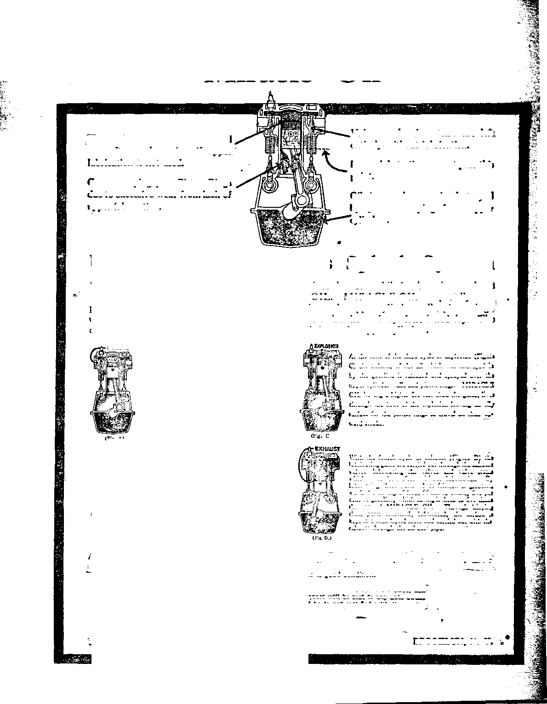

iPp’ipiasiW^
Mar. 29, 1922, Vol. Ill, No. 66
PwSJishcd every other week at 18 Concord Street, Brooklyn, N. y., U. S. A,
Five Cent! a Copy—$1.00 a Year
Canada and Foreign Countries, $1.SQ
VOLUIH 8 WEDNESDAY, MARCH 29, 1922 NtjMMXI fifi
CONTENTS of the GOLDEN AGE
LABOR AND
Obstacles In the Path of
Plans for Enslaving Labor 390
Working an Age-Long Horrible Hoax
ECONOMICS
Clergy Are Their Own
Hard Times Deliberately
Labor's Overwhelming
Ths Remedies Available 395
Uncle Sam Looks Healthy, But—_____________...407
SOCIAL AND EDUCATIONAL
Profiteers Purchased the Parental Discipline _____,-,-399
Press ------ ------------389 m Textbooks —
FINANCE—-COMMERCE—TRANSPORTATION
POLITICAL—DOMESTIC AND FOREIGN
Pittsburgh Papers Approve Anarchy ...
World War Gave Them Their Chance
Clergy Guilt for the Wai’ 390
Polideians Always Obey Mammon......,...............393
Hoodwinking the Canadians ............
Democracy and the Bonus 401
Use for Dismantled Ships 402
AGRICULTURE AND HUSBANDRY
Profiteering (?) on the Farm..............................-.-404
HOME AND HEALTH
A Word of Protest ..........405 Too Severe os the M. D.*s 405
TRAVEL AND MISCELLANY
A Little Brazilian Friend 403
RELIGION AND PHILOSOPHY
Sanctified Live Stock _._.4Q3 On the Toboggan ......
A Study "ta-Bvoiutlon_ “1411 Btndlw In tbe "Han, of The Giant Error of die God"----------
feblHied every other Wednesday at 18 Concord Btreet, Brooklyn, N, Y., . U. 8. A.
By WOODWORTH, HUPGINGS and MARTIN CLAYTON J. WOODWORTH.......Editor
ROBERT J. MARTIN .... Buslnna Manager WM. F. BUDGINGS......Sec'y and Treaa.
Copartners and proprietor. Address: 18 Concord Street, Brooklyn, N. Y......II. S. A.
Fivn Cents a Copy — 81.00 a Yeab. forbigm offices : JMtak : 34 Craven Terrace, Lancaster Gate, London W. 2; Canadian: 270 Dundas St. W., Toronto, Ontario : Australasian ' 495 Collins St., Melbourne, Australia. Make remittances to Tbe Calden Age Entered M eacond-elaea mattar it Brooklyn, N. L mar Um Act March 5, lift.

▼•lame III
Brooklyn, N. Y., Wednesday, March 29, 1922
AT New Castle, Pennsylvania, fifty miles north of the city of Pittsburgh, in the fall of 1919, when the steel strike was on, the workers in the steel industry in New Castle found that all the lawyers in the city of New Castle had been engaged as deputies and thus there was no possible opportunity for the workers in New Castle to have tile benefit of legal assistance in respect to the outrages that were being perpetrated in that eity at that time. Men and women in the city of New Castle were picked up on the streets, they were taken from their homes, they were beaten and
EDITORIAL NOTE
STENOGRAPHIC report of a lecture by the editor delivered in Carnegie Music Hall, Pittsburgh, Pa., to the labor unions of the city at the request of the National Association of Patternmakers.
' jailed by the hundreds. Homes were broken in-( to, property was damaged and men were robbed and terrorized, but they were promised immedi-' ate freedom if they would return to their work, f Now who are the anarchists under conditions
At Donora, thirty-five miles south of Pittsburgh, negro strike-breakers shot white strikers without provocation.
At Clairton, twenty miles south of Pittsburgh, after permission had been given to hold a union labor meeting, state troopers rode down the assembly; men and women were arrested, beaten up and jailed, and some were beaten while in jail; friends who came to provide bail were also arrested; workers who stopped to read a notice on a bulletin board were attacked by state troopers, who used their clubs, breaking the scalp of one of the workers.
At Woodlawn, nineteen miles west of Pittsburgh, private detectives of the steel company arrested newcomers, beat, kicked, and fined them, and sent them back on the next train. It
U' like that in this land of America ?
K At Monessen at the same time (Monessen is fe' a city about forty miles south of Pittsburgh) old men and women were beaten with clubs and ridden down by horses, women and children B*: were jailed without food, men were locked up . in cellars, homes were searched and the entire E city was terrorized; in the same city of Mones-pT sen, at the same time, the wife of a railway worker was arrested by a constable and released on $50 bail, with instructions to report K in Court the following morning between 8: 30 e- and 9: 30. When she appeared the next morning she was notified that the case against her had been disposed of and the fifty dollars had been forfeited. This woman weighed one hundred and K - eighteen pounds and was charged with having defied the police of Monessen with a club.
happened that the sufferers in this case were two boys who had gone there to visit a cousin. The kicking, punching, and beating was done in the home of the village burgess, answering to the office of mayor.
At McKeesport, fifteen miles east of Pittsburgh, attorneys and stenographers were forbidden to secure affidavits and were ordered from town.
At Duquesne, twelve miles southeast of Pittsburgh, on a Sunday, in the following spring, May 9th, 1920, an attempt was made to test out the Constitution of the United States and the Constitution of the State of Pennsylvania, both of which provide that the citizens have a right in peaceable manner to assemble for their common good. This attempt was made because the Mayor of Duquesne, who was the chief magistrate of the city and the president of its national bank, had made the boast that “Jesus Christ could not speak in Duquesne under the auspices of the American Federation of Labor”. After four successive notices had been served on the Mayor a week apart by registered mail telling him of the time and place where the test would be made, the six speakers who gathered for the purpose were arrested and jailed before they could finish a sentence apiece. Seven spectators were arrested for disturbing traffic, and a newspaper man was compelled to give up his camera and plates. Another man was arrested for taking a snap shot and one man was ridden down by the state troopers who had been brought to the scene. The magistrate who passed upon the case, Judge Kennedy, imposed a fine of $25 upon each of the speakers, stating in his opinion, “It is not the cause of organized labor to which the mayor objects; it is the discussion of such a subject”.
At Braddock, ten miles southeast of Pittsburgh, while the strike was on, men and women were attacked in church, and school children were ridden down in the school-yard, and a man chopping wood was dragged out of his cellar and arrested without cause, while another man was clubbed for walking slowly while counting the money he had just received from a pay window.
At Homestead, seven miles east of Pittsburgh, homes were invaded, property was destroyed, men and women were dragged out of bed and jailed undressed, and medical aid was refused, ’ because some of the workers in that town were not sufficiently grateful for the twelve-hour day, and other like blessings which Mr. Gary, head of the steel trust, and his friends were anxious to have them retain.
In Pittsburgh itself the Young Women’s Christian Association was throttled by the big financial interests of the city because it dared to teach some economic truths.
Under the circumstances, in this city of Pittsburgh, which is the center of anarchy in the United States, at the hands of those whose duty it is to uphold the laws and protect the workers in their rights, it gives me great pleasure to accept the kind invitation of the Pattern-makers Association to speak for a little time to this intelligent audience of law-abiding but libertyloving men on the subject of Union Labor.
IT IS a matter of history that the Interchureh
World Movement was ruined because it had H a committee which dared to tell the truth on the steel question. That committee furnished the <1 proof that the steel trust maintains the twelve- ■ hour day, and wages below the comfort level, -refuses collective bargaining and administration, and employs detectives, spies and thugs. Moreover, after the “Movement’s” financial • J ruin for telling these truths the men who wrote J the report bravely maintain that they had told 3 the truth—and they did. ?
The report tells some things which make an ® American hang his head in shame that we live .J in a land where such things could be possible. J Among other interesting things the report re- | cords the simple fact that the newspapers of < Pittsburgh during the steel strike made no ef-fort to tell the truth. Without exception they i refused to discuss the causes of the strike or to tell the truth about the number of men on ’ strike. <
The newspapers falsely stated that the miUa were running full time six weeks before they actually were. When there were six hundred men at work in the Cambria mills the headlines of the Pittsburgh Post, Chronicle-Telegraph, Sun and Press reported that between seven and eight thousand men had returned to work. The Chronicle-Telegraph and the Gazette-Times contained stories that the strike was pro-Ger- " man in its origin, which was untrue.
Whenever the state constabulary clubbed, shot, or murdered strikers the Pittsburgh newspapers referred to these outrages unfailingly as -being riots for which the victims were to be blamed. Thus when Nick Gratichini was mun* dered by state cossacks, while sitting in his own dooryard with his baby on his knee, the Pittsburgh Chronicle-Telegraph reported that he was skillfully picked off by troopers while sniping. No doubt the public believed it all.
In another instance in which a woman was hit by a bullet while standing on a street corner, and a male companion standing by her was killed, the Pittsburgh Press printed a story of how ‘ a brave state trooper had killed a striker by 1 firing at the flame of the hidden sniper’s revolver. The man killed was not a sniper, was not hidden, did not shoot and had no revolver from which a flame could come.
g-t-;. — ■
K1 The report shows that the steel-workers were p living in congested and intolerable surround-
Ings, most of them working ten to fourteen hours daily, many with a twenty-four-hour shift t - every two weeks and large numbers working
!>' every day in the week. Always, in every in
s'. stance, the grievances, statements, and testi-mony of the strikers were presented in the news-* papers under such headlines or in such context ; as to convey the impression that what the work-t, ers desired was unreasonable and that their grievances were imaginary. Every one of the £ Pittsburgh papers during the strike used its in-fluence in the support of policies which were
I' against the general public interest.
jT ^THE report proceeds further to show that the t _ attitude of the clergy of Pittsburgh was ex-. actly the same as that of the press; that it did 1 not examine or discuss the causes of the strike, I nor seek to exert a wholesome restraining influ->' ence on public officials who were overriding the =: provisions of the United States Constitution re-
\ garding the right of free speech and public as-aemblage. It did not even attempt to create a public opinion that would demand a discussion of the circumstances under which the Constitu-- tion was violated.
These conditions which we have seen cluster ’ about Pittsburgh have their counterpart to
some extent in every section of the United States.
? "D CRN in the throes of revolution, the gov-f eminent of the United States rests not up-
t on bayonets, the divine right of politicians,
r- profiteers, or preachers, but upon the will of
? the American people, a will which functions at
5s" the ballot box in obedience to public opinion,
s iWhen the time comes in America that the right
. of free and public discussion of all questions
\' is forbidden, and the politicians, profiteers and
f- preachers get full control, then the American
T, republic as a democracy ceases to exist. Yet
* the United States is hastening in this direction,
and within the past few years has lost more of liberty than it gained in the previous one hun-Hred.
The World War really gave the politicians, & profiteers, and preachers, the opportunity of ? lenturies, and they used it to the last limit. When America entered the war she had almost as much reason to go to war with England as with Germany. Ostensibly neutral, ostensibly protected by treaties which guaranteed equal treatment to both belligerents, the United States supplied unlimited money and munitions to Great Britain, but was forbidden to communicate with Germany, much less to trade with her.
France was ready to quit long before the United States entered the war and would have made peace with Germany. M. Gabriel Hano-teaux, formerly Minister of Foreign Affairs of the Republic of France, in his history of the late war states in effect that France was ready to make peace in the latter part of the year 1914, but was dissuaded from doing so by three Americans, namely, Robert Bacon, of the financial house of J. P. Morgan & Company, fiscal agents for the British government, Myron T. Herrick, and William G. Sharp, and that these men represented to French officials that if France would continue the war these three men would organize a propaganda that would put the United States into the war on the side of the Allies. M. Hanoteaux further stated that the sum of money which was provided to goad the United States into the war was too large even for American comprehension.
Congressman Calloway, on the floor of Congress, has made the charge that in March, 1915, the J. P. Morgan interests, the Steel, Shipbuilding and Powder interests, got together twelve men high up in the newspaper world and employed them to see that the newspapers of the United States should get the country into the war. These twelve men selected one hundred seventy-nine newspapers and by a process of elimination gradually reduced them to a point where they found it was necessary to purchase only twenty-five of the greatest papers to control the news policies of the nation. Emissaries were sent to purchase the policy of these papers. An agreement was reached; the policy of the papers was bought, to be paid for by the month. An editor was furnished for each paper. It was the business of these editors to see that the United States should enter the war at the proper time. Even eighteen months later the American people were so hostile to the idea of entering the war that they reelected Presi-
dent Wilson because he kept them out of it, although at the very time they reelected him sev-, on Wall street men were working early and late, perfecting the war legislation which was subsequently forced upon the country and which caused a hundred thousand of America’s finest boys to be slaughtered and which created thirty thousand new American millionaires, and placed this country more directly in the control of the Morgan interests than it had ever before been.
AS SOON as the war was finished, the first consideration of those who had become millionaires through the harvest of blood and tears was to devise methods (1) to keep their own ill-gotten gains, and (2) to take away from Union Labor and from all labor the gains which it had made during the war period.
Having learned the great lesson of how to sway the people by debauching the press, nothing was easier than to continue the debauch-ment after the war, so that the people might not give any thought to the colossal robberies which had been and still were being perpetrated upon them. Accordingly, the so-called “Red” menace was gotten up; and practically every newspaper in America was filled with scare headlines calculated to terrorize the American people into thinking that in some strange way a handful of individuals whom they did not know and could not find and never heard of personally were in some way going to enslave them overnight. Judge G. W. Anderson, in an address before Harvard Liberal Club in Boston, January, 1920, discussed this subject somewhat at length. Judge Anderson was district attorney in Boston while the scare over German spies was at its height, and therefore had the best'of opportunities to know the facts. He said:
“I assert as my best judgment, grounded on the information that I can get, that more than ninety-nine percent of the advertised and reported pro-German plots never existed. I think it is time that publicity be given to this view. I doubt the Red menace having more basis in fact than the pro-German peril. I assert the significant fact that many of the same persons and newspapers that were faking pro-German plots are now promoting the Red Terror. There are Reds: probably there are dangerous Reds. But they are not half as dangerous as the prating pseudo-patriots who under the guise of Americanism are preaching murder, and shooting at sunrise, and to whom our church parlors and other public forums have hitherto been open.”
THE second step after covering up their own profiteering by the Red scare was to under- 1 take the destruction of Union Labor, and that work is considered by the representatives of the profiteers to be now practically an accomplished fact, the profiteers looking forward to the happy day when they will be able to maintain the twelve-hour day everywhere as it is so well maintained in Pittsburgh and vicinity, and when they can pay the workers the minimum . required to keep them alive and able to work at all. In this work of destroying Union Labor the newspapers of the country which have been under the control of the profiteers have done just as faithful work as they did in getting the American people into the war and in masquerading or building the “Red” smoke screen in . front of the profiteers immediately afterward.
And the work which was so ably done by the press in getting the country into the war, in hiding the profiteers from view under the camouflage of the “R e d” menace and “Bolshevism” outcries, and which has now succeeded in practically destroying Union Labor, has been ably backed up by the clergy, Catholic and Protestant. I give you the evidence:
LET the clergy themselves say what responsibility they had for getting the United States into the war; we will give a number of citations, so that all may be convinced. First comes Rabbi Wise. Addressing recently the Free Synagogue congregation in Carnegie Hall, New York city, he said:
“Failure of the churches and synagogues to maintain leadership over the people was the cruse of the present war. They have enthroned a war devil in the place of God. The church is muzzled and throttled into submission. It is like a dumb dog, old and toothless, that can no longer bite. Many of us looked to the Socialists to avert such a war as this; but we never looked to the churches, mosques, and synagogues to prevent war. None of us expected such a thing from them, and we know what would happen to any leader in the Church of England who would dare raise his voice against his country^ part in the present strife. And when the nations were preparing for this war they never consulted the churches because they knew that, just as they relied upon their ambulance corps and their commissaries, they could rely upon the churches to uphold them.”
The next witness does not give his name, but
States that he is a clergyman. He writes in The Nation, March 6, 1920:
“The record of the war activities of the churches, while very ample, is simple. Practically every pulpit in the land was a source of patriotic inspiration. Every clergyman labored day and night fostering the morale of the army and the people. At home the clergy preached atrocities, and in the camps they fired the soldiers with a holy zeal to attack and kill the enemy. Briefly, the record shows that both here and abroad each of the ordained spokesmen of Christianity justified and consecrated the action of his own people in resorting to arms. His nation was fighting God’s battle, and all who wished to be friends of God must help to the fullest extent of their powers. Thus a composite photograph, as it were, of all the Christian preachments reveals to us the doctrine of the man in the street, the doctrine of those who believe it to be their highest duty to be ready to die for their country whether right or wrong.”
But how about dying for Robert Bacon, Myron T. Herrick and William G. Sharp?
Another witness is DoctorEdward A. Steiner, a converted Jew, a Congregational minister, occupant of the chair of Applied Christianity in Grinnell College, Iowa. He writes in The Independent of his impressions of Europe, obtained after several months recently spent there:
“All through Europe I found a feeling, freely expressed, that at a critical moment in the world’s history, organized religion failed to fulfill its claims as a bringer of peace. The hopes of mankind placed in it were not realized; for the churches failed to function except as an amen to the reactionary Pagan state. The church gave its all to Caesar; even that which was God’s; the folds of the flag obscured the cross, and the great sacrifice of Calvary seemed in vain. Sermons now are full of assertion that militaristic force is futile in settling quarrels between nations, that besides being un-Christian it is impractical; and not only ministers say it, but also professors, essayists, political economists, sociologists. However, they are saying it between wars, when it is safe to say it. If the church or its ministry were faithful to the spirit and teachings of Jesus during one war; if the state knew that it could not use the church as a recruiting station, and as a laboratory for the culture, of fighting morale, it might be less willing to rush into war. Of course the church would suffer martyrdom; but there is an outspoken demand that Christianity manifest itself in its full power, by accepting the consequences of its teachings, or cease its pretense of being tiie bride of Christ when it is only the concubine of
Csesar.”
Still another witness is Reverend William Austen Smith, editor of the The (Episcopal) Churchman:
“The churches among all the warring nations shared the sins of their governments during the war. We hated as our governments bade us hate. We spread lies about our enemies as those lies were meted out to us in official propaganda. We taught unforgiveness even as our rulers and diplomats inspired us to do.”
The final witness is Reverend John Alfred Faulkner, who gives expression to the following sentiments in The Epworth Herald:
“The church is partly responsible for the great war. She has taught an exaggerated and false patriotism. No war was ever waged but that the clergy have either incited it or praised it when once started. What if between 1871 and 1914 every synod, conference and clergyman in Germany had spoken out against that militarist regime and those militaristic ideals of which the Great War was the logical consequence; what would have been the result? I think the only man who did thus speak out was Liebknecht, the Socialist, and he was in prison for two years. Men who sinned in a similar way in America were sentenced to twenty years, more or less; and what Church has asked for their release?”
AS THE preachers of the country acted as recruiting agents in the late war, and as they have always done in previous .wars, and as they could be depended upon to do in any future wars, so they cooperated with the profiteers and politicians in holding up before the American people the Red menace so as to hide the profiteers from view, and they are entitled to full credit also for the attack which has since been made upon American Labor.
Abraham Lincoln once said:
“Labor is prior to and independent of capital. Capital is only the fruit of labor and could never have existed if labor had not first existed. Labor is the superior of capital and deserves much the highest consideration.”
The normal position of the clergy toward labor was illustrated in Pittsburgh and Buffalo in the fall of 1919, when labor made its bootless effort to gain the eight-hour day and other decent concessions from the billionaire steel trust. At that time the newspapers of these two steel manufacturing centers contained fullpage advertisements given over to advice of clergymen, Roman Catholic and Protestant, urging the workers to forget their grievances and return to work. In one of these announcements, a Roman Catholic dignitary declared that if any Catholics failed to heed its warning, “I should regard them as apostates from the Catholic faith, traitors to their country, and enemies to authority”.
BEE building sites for churches and parsonages, and many other favors, have been profitable investments for many of America’s great corporations. At the town of Steelton, Pennsylvania, the site of the great Pennsylvania Steel Company’s plant, it was a standing joke for many years among the clerks in the offices that a strike was an impossibility, because the moment one was brewing, or in fact the moment attempts were made to form a labor union, the local Roman Catholic priest would call all his congregation together and threaten to send them to hell unless they abandoned the attempt. It can be readily understood how such assistance would be appreciated.
It is quite to the point that we should stop a moment to discuss this “hell” question and I am joing to tell you something now that lets the cat out of the bag and is generally not told to common people. And why?—Because there are tricks in all trades, and the greatest trick of all is the trick which is played upon the common people by the clergy. There is only one word in the Old Testament which is translated by the word “hell”. The Old Testament was written in Hebrew, and the word of which we speak is sheol. It occurs sixty-five times in the Old Testament and in our common version it is translated thirty-one times by the word “hell”, thirty-one times by the word“grave”,and three times by the word “pit”. But the word simply means the “grave”, the state or condition of death into which all go, good and bad alike, at the time of death.
Let us take the story in the Bible where this word first occurs. You have all read the story of Joseph, who was sold by his brothers to be a slave, and how the boys took his coat and dipped it in blood and carried it to their father and showed it to him and said: “Look and see, is this the coat of your son Joseph!” and Jacob said: 'My son has been slain by a wild beast and I shall go down into sheol unto my son mourning’. What did he mean! I ask you the question. I urge you to use your senses. Where did Jacob expect to go and where did he expect to meet Joseph! Joseph was his favorite son and he believed that what had happened to Joseph would happen to himself. Where did he think Joseph had gone and where did he himself expect to go!
Again in the book of Ecclesiastes, fifth chap- .. ter, ninth and tenth verses, the statement is „ made /Whatsoever thy hand findeth to do, do it ’ with thy might; for there is no work, nor knowledge, nor wisdom, nor device, in sheol whither thou goest”. Do you get it! Everybody goes = there; everybody goes to sheol; they do not go ’ to any other place or condition between death and the resurrection. And if so why urge peo-pie to avoid going to sheol when everybody automatically goes there! And when you have disposed of that question you have disposed o£, ' the whole clergy scheme. The entire clergy business is a fraud from beginning to end.
ET the clergy themselves say what has been ' the real attitude of the church, whether
Protestant or Catholic, toward labor. From the pen of a clergyman in a magazine, entitled “The Social Preparation”, we quote: - :
“It is incontestable that the ruling classes have always looked to the church to bolster up the existing regime^ however infamous and oppressive. Gibbons affirms that to a statesman all religions are equally useful. It would certainly look so when in the late war our pastors were asked to sell bonds, and specially prepared sermons were sent out by the Government for use in the churches of the land. The rulers of this world know full well that ■ religion is the prime motive in men’s lives; and so when they wish to further certain measures, they go to the rulers of the church and say: ‘Now we want the people*' to do thus and thus, and we are sure we can count on ■> your influence’. So, now frankly and grossly, now subtly, . the church is enlisted to fight the battles of the state. _ Balak wants Balaam to curse his enemies; and what ig of pathetic moment, Balaam generally does the job. 1316 clergy of Philadelphia were asked to participate in.a Liberty Loan parade, and the Church paper stated that the request came with somewhat the weight of a military command.” '
Reverend Robert Whitaker of Los Gatos, California, in an address quoted by the Boston Globe recently said:
“As crises grow tense ministers grow nervous about ‘queering’ themselves with the controlling powers of out • American industries. Their business is to say nothing and to say it pleasantly. I say with the greatest kindli* ‘ ness that the largest part of preaching the gospel is none ' other than a conscious evasion, through platitudes and f generalities, of questions that vitally interest and <xn>> cem the working people—there is a sort of holy sdbth-ing-syrup offered to keep people quiet, and the preachat who tries to wake the people up to the side of righteoua* -ness and justice for the commonplace man is in dangat
r'
*
of losing his support. The public never bothers itself about the wrongs of the working man till he steps on its corns, and the church is the same. The history of the steel troubles is the blackest chapter in the history of any civilized country; yet the church said nothing until it was forced to speak, and then it said mighty little.”
Roger W. Babson, statistician and general adviser for Big Business, while not a clergyman, nevertheless understands very well what the churches, Catholic and Protestant, have been used for in the past and what they are used for now. In one of his letters of advice to capitalists he says:
- “The value of our investments depends not on the strength of our banks, but rather upon the strength of our churches. The underpaid preachers of the nation are the men upon whom we are really depending rather ' than the well-paid lawyers, bankers and brokers. The religion of the community is really the bulwark of our investments. And when we consider that only fifteen percent of the people hold securities of any kind, and • that less than three percent hold enough to pay an income tax, the importance of the churches becomes even more evident. For our own sakes, for our children’s sakes, for the nation’s sake, let us business men get behind the churches and their preachers! Never mind if they are not perfect, never mind if their theology is out of date. The safety of all we have is due to the churches, even in their present inefficient and inactive state. By all that we hold dear, let us from this day give more time, money, and thought to the churches of our city, for upon these the value of all we own ultimately depends.”
The same gentleman on another occasion un' burdened himself as follows:
“Take the labor situation. I beg the pardon of clients for talking so much about labor conditions. I would not do so except that I am convinced it will be the labor situation which will ultimately bring to an end our present period of prosperity, and throw the nation ultimately into chaos. The solving of the labor situation is wholly a question of religion. The wage worker will never be satisfied with higher wages and shorter hours, any more than you and I are satisfied with more profits and a bigger house.”
Bishop Gore, at the Anglo-Catholic Congress in London, also said:
“The whole economic and industrial system of the eighteenth and nineteenth centuries was allowed to grow up as part of our national institutions, as if religion and the church had got no words to say to it; yet from end to end it trampled on the root of principles of brotherhood; it was associated with a legal system which Bet an infinitely higher store on property than on person, and it quite forgot the root meaning of justice.”
WE DO not need to call attention to the fact • that the politician is forever and always “double-crossing” the worker. The politicians persuaded the American people to vote for Mr. Wilson because he kept us out of war, and at that very time the plans were being perfected to get us into the war. Likewise the people were persuaded to vote for Mr. Harding because he would keep u? out of the League of Nations, and all thoughtful men knew that Mr. Harding would not be in power a year before the United States would be in the League, and the Conference at Washington was nothing more than the League of Nations under a new name. Indeed, Lloyd George himself has cynically referred to it as the same old gang that was at Paris. As the politicians helped to get America into the war, so they helped to cover the tracks of the profiteers after the war was over. It was the politicians who were responsible for such injustices as happened to laboring men in western Pennsylvania in the fall of 1919, and it was the politicians who covered up the stealings of the thousands of millions of dollars engulfed in the airoplane, shipbuilding, cantonment construction, and other war expeditures.
My hearers will remember that very same Lever Act which, it was agreed on the floor of Congress, should never be invoked against the workers, was invoked against them at Indianapolis, and it looked for a time as though a hundred or more labor leaders in the coal industry would have to go to prison on account of that Act. The Act was ostensibly to catch the profiteers. A hundred or so profiteers were caught under the Act, but at the critical moment the Supreme Court handed down a decision that the Act was unconstitutional, which meant that all the loot recovered from the profiteers was returned to them; and recently the three-year limit under which prosecutions could be made expired, with the net result that the greatest stealings of history are now absolutely safe and cannot be touched.
A SIMILAR situation prevails in Canada, where the Canadian government authorized the establishment of a Board of Commerce * which was to look into the fabulous profits made by the profiteers of Canada during the war, and it was quietly understood at the time the board was formed that the board would never do one single thing. It was merely gotten up in the first place as a blind to deceive the people and prevent them from doing anything, for much the same reason that the Bolshevist and Red menaces were gotten up in the United States.
James Murdock, Secretary of Labor of Canada, speaking on the subject of the Board of Commerce and his connection with it, said:
“After we had discovered that members of the textile industry made from 300 to 510 percent profit, we asked that the whole industry present statements of profits to the Board. A deputation of the industry was at once on its way to Ottawa to demand that an Order in Council be signed, relieving them of the necessity of giving us the information we asked. We tried to investigate the cement trust and the canneries trust, but it was useless. We were blocked at every tu. n.M
AS A sample of how completely the American people are at the mercy of the profiteer crowd through the latter’s control of the press, take the coal squeeze which was pulled off in the latter part of 1920. In the summer of that year the bottom fell out of the coal market for lack of demand, and straightway through the Cleveland office of the Associated Press and other avenues of propaganda there was widely spread the information that a great coal shortage was facing the American people. All the newspapers of the country took up the hue and cry, and in six months the great financiers back of this movement put five hundred million dollars excess profits into their pockets, which, had it not been for this progaganda, would have been more widely distributed and would have been greatly to the advantage of the American people as a whole.
THE hard times of the latter part of 1920 and the whole of 1921, and to date in 1922, were deliberately brought upon the country by the seven men who control the Federal Reserve Bank. John Skelton Williams, ex-Comptroller of the Currency and at one time a director in the Federal Reserve System, has exposed the whole scheme by which the Federal Reserve System, despising the banks of the rest of the country, threw the bulk of its re**’orces toward New York, Chicago, and St. Irais.
He showed how, while the banks outside of the reserve and central reserve cities received accommodations in the shape of rediscounts and bills payable for only 10 percent of their total loans and rediscounts, the banks of three big . cities, New York, Chicago and St. Louis, re- , ceived accommodations to the extent of 24per- ' cent of their total loans and rediscounts. '
In September and October, 1920, when great : pressure was brought to bear by the suffering . businesses of the country to induce the Federal Reserve Board to change its policy of attempting to ruin Union Labor and the smaller business men of the country, Mr. Williams made an-earnest effort to get the Board to change its policy. Yet between then and April 29, 1921, at ' which time the Board reported the complete success of its policy of deflation and contraction, . it was brought to light that the actual contraction since October 15, 1920, was $925,000,000. What was the reason the Federal Reserve Bank, was so anxious to carry through this policy ofi " deflation? It was to carry out the prearranged plan of crushing Union Labor. It is to the Federal Reserve Bank that the country is in-' debted for the policy which made the Liberty Bonds of the United States government worth ■ less than their face value. From the great profits which have been wrenched from the people by the Federal Reserve Bank, arrangements have been made for the construction ol a new bank building in New York that will cost more than the total cost of the White Houses the Treasury Building, and a half dozen of our state capitols, while salaries of the officers alone have been increased from $93,000 in 1916 to $400,000 in 1920. The salaries paid by the New -York Reserve Bank to two dozen of its officers aggregate more than the aggregate salaries paid by the government of the United States to all the senators (fifty-two in number) from all the states east of the Mississippi river. Most of these officers never got over $1,500 to $2,000. until they got in touch with the public moneys,' and now their salaries are two to ten times what they ever before earned.
The men back of the great financial interests that control the Federal Reserve Bank openly boasted early in the year 1921 that they were going to put five million men out of work because a hungry man is an obedient man, and that if this did not succeed, by the first ofl< January, 1922, they would have twenty million
QOLDEN AQE
men out of work. These men believe that Union Labor is whipped and do not hesitate to say so in their publications. They recently have been favored with a ruling of the Supreme Court that no picketing hereafter may be accompanied by importuning, or following of men.
A S AN illustration of how profiteers and poli: XX ticians contrive to play horse with the
American public, take the case of Mr. Newberry, ' now representing the great state of Michigan ~ in the American Senate. The Newberry gang
£ paid $5,700 for a film showing him as standing
- on the bridge of a battleship receiving the honors of a procession of American battleships, g This film was shown during the 1918 campaign in Michigan at about two hundred theaters, and of course was a fake from beginning to end. ' The posing was all done on an imitation wooden battleship, and it required two weeks of a highly paid publicity agent to splice and fit it into a v' regular film showing a review of the navy. One f cannot but wonder what would happen to any
£ Labor Union that would resort to such a con
temptible piece of knavery. Would its members be favored with seats in the United States . Senate? — or seats in a prison cell?
"ITTE NOW have the question fairly before us: V Y What are the obstacles in the path of
■* Union Labor? We find the great financial in’ terests of the country definitely leagued against * • - Labor—which they regard as their greatest foe.
We see that they have the ability to win public c opinion upon their side by subverting the Press, t'. and that they have done so. We see that they •' ' have the power to restrict employment, and f right while the employment is being restricted, i to raise the price of the necessities of life, such
; . as coal, by artificial means. We see that the
,■ politician stands ready to use all the instruments of government which lie within his grasp f to throttle with iron hand any attempt on the part of labor to share in those gains or even to jfr retain the advantages already secured. And third we see the clergy class, Catholic and Profc- testant, the ready and willing tools of the profiteers and politicians, ostensibly preaching the gospel, but really continuing their part of the \ conspiracy which was entered into between the
Emperor Constantine and the Christian bishops in the year A. D. 325, when the early Christian church, which was the laboring man’s church and in which no acceptable member could be either a soldier or a magistrate, passed out of existence, having been swallowed up by the Roman system. It is an interesting fact that this same Constantine who pulled off this clever stunt called this council of bishops in the same year in which he murdered his own son, and at this council he, Constantine, an unbaptized, pagan emperor, invented and forced upon the unfaithful Christian church the doctrine of the trinity, which is not a Bible doctrine, but which has been held by the unfaithful church from that time to this, especially by the clergy.
Dr. T. Morey Hodgman, former President of Macalaster College, has said on this subject:
“Since the fatal bargain was made by Constantine in the fourth century between the leaders of the church and his own political ambitions, the Christian church has been a coward and a traitor to the crucified Christ. Since that unholy bargain, when the church lead.’’ surrendered their convictions as to war and the internationality of Christianity and surrendered their sons to the bloody unnecessary wars of the succeeding centuries in return for power and riches and authority, the Christian church has ceased to capture the minds and hearts of intelligent men, has concerned itself with sectarian bickerings and servility to political parties and has become a coward and a hypocrite.”
TT IS to this group of imperial and ecclesias--*• tical politicians that we owe the present conspiracy against Union Labor, which is the representative of all labor. The Scriptures designate this association of profiteers, politicians and preachers by the word Babylon. What are those to do who have been despoiled by this system? Such remedies as lie at their hands are the study of cooperation in all its forms — cooperation political, as illustrated by the Nonpartisan movement, which has accomplished so much for the farmers of the northwest; cooperation financial, as in the organization of the peoples’ banks established by the thousand in Europe and to a very limited extent in this country; the establishment and support of their own press and the support of the press which is openly and pronouncedly in sympathy with the workers’ cause; and cooperation in the reestablishment in the earth of the early church, which had no popes, no cardinals, no archbishops, no bishops, no priests, and no clergy of any kind, but in which every believer was a member of the royal priesthood, glad to do what he could to lighten the burden of his fellow man and to proclaim the coming kingdom of our Lord and Savior Jesus Christ, which will fully solve in the Golden Age the problems of Union Labor, and, indeed, of all the families of the earth.
About this matter of bishops so that when you read the Bible you can understand it, the bishop in the New Testament is simply the man selected by the vote of the congregation to lead the meeting. For example, if we were gathered here as a band of Christian men and women and and you wanted a chairman you would elect some person by the raising of the right hand to serve either for one meeting or for a dozen meetings or for a year, the person thus elected would be your bishop; and that is all a bishop is. That method of electing bishops is all right; any other method is all wrong, unreasonable and false and is used to obtain money from the people under false pretense.
God himself is the outspoken Friend of the worker. He has declared, “If a man will not work, neither shall he eat”. The Lord Jesus says of Him, “My Father worketh hitherto, and ’ I work”. Jesus said of Himself, “I must work the works of him that sent me”. The Apostle said, “We are co-workers together with God”. The Bible from first to last holds out the dignity of work. The very first chapter of the book contains a call to Union Labor. It reads: “Let them [all mankind] have dominion”. They were to have this dominion over the earth and earthly things by subduing the earth, but they could not do this without labor; nor without labor in unison. The foe of the workers is not our Heavenly Father nor our Lord Jesus nor their blessed Word; but the real foe is Satan, the great being that has organized the politicians, the profiteers, and the preachers of the world into the great system, Babylon,he uses for keeping the workers under control. The workers of America owe it to themselves to have nothing to do with any religious system which has associated with it either a pope, cardinal, archbishop, bishop, priest or clergyman. Every one of these systems is of the devil and tends to the enslavement and impoverishment of those who are carrying the burdens of civilization upon their shoulders.
After all,my dear friends, the real solution of the problem is a little beyond our ability. There is but the one remedy. Something can be done by cooperative means to alleviate the present situation of the laboring man, but his real / remedy is the long-promised kingdom of the ' Lord, even now at the door. Earth’s new ruler is promised as one who shall “deliver the needy when he crieth; the poor also, and him that hath no helper. He shall spare the poor and needy, . and shall save the souls of the needy. He shall redeem their soul from deceit and violence: and J precious shall their blood be in his sight.”
In the days of this new and perfect sovereign < we are told that man, not money, will be the ’ most admired, most loved, most sought after. “I will make a man more precious than the golden wedge of Ophir.” From the men of that ~ happy era not only will poverty be removed, but sickness also. “The inhabitant shall not say, I am sick.” And best of all, death shall be no more; for in the happy days of Christ’s king- * dom, for which we all have prayed so long, we '' are told that “there shall be no more death, neither sorrow nor crying, neither shall there be any more tears, for the former things are passed away”. A
These happy days are at the door. Not only is death to cease for millions of the living generations, but all the dead shall return to their former estate here on earth. Can we doubt that the Lord knows where they are! He said, } ‘All that are in their graves shall hear the voice of the Son of man and shall come forth’. The f4 angel that spoke to Daniel knew also. He said to Daniel, “Many that sleep in the dust of the ■ earth shall awake”. The angel did not think heaven was such a disorderly place that people went there to go to sleep and in the dust at that; -
he did not think they were in purgatory, for he did not know anything about such a place; Pope J Gregory had not yet invented it; and he did not ' f think they were in eternal torment. And if they had been, and if it were possible to get to sleep in such a place, why would the angel or anybody else who had a heart take any satisfaction in wanting to wake them up? We have all been fooled. The clergy business is all a great Jj? swindle from beginning to end, but God’s Word is true and His coming kingdom is certain. And it is the desire of every labor union man, and of every man; it is the desire of all nations, living and dead, and the desire will be fulfilled,
-
CHRISTMAS greetings—from a prison cell.
My friend who has subscribed for me requested that I write you a few lines and at the same time advise you that The Golden Age has arrived. You couldn’t imagine a person having a golden age in a prison cell. Well, we are not. I want you to know I like some of the material and I am sure it is reaching the right sources.
I came here in September, 1918, the first time along with one hundred more. I was released on bond after one year; but I had to return after a short rest of eighteen months outside. .We lost our appeal.
To begin with, we were on trial five long months in the Landis Court at Chicago. Our jury listened to our case all that time. They convicted one hundred of us in forty-five minutes ; that is, they found two men guilty in each minute. War scare and hysteria and lack of all moral courage on the part of our jury gave us from five to twenty years in the Leavenworth Federal Prison. We were charged in five counts of an indictment with ten thousand crimes committed all over the country. They said we tried to steal the country like Morgan and Rockefeller. We were suddenly undesirable when war was declared, although we were legal twelve years previously. We were confined in the Chicago Cook County Jail six months or more, awaiting trial. We were gathered from all four corners of the country—after they raided all our union halls, homes, offices, etc. They stole all our private property, such as any labor organization needs to do business with, and what they didn’t burn and smash they hauled to Chicago and used as evidence in trying to prove a conspiracy, in which they failed. But we didn’t believe in war; so that was enough.
The jury which we secured to begin with was discharged and another secured that suited the prosecution better. You see, one must have a good jury to prove ten thousand crimes. The real charge was that we only wanted more of the wealth that we, the workers, create, for social use. So th°y said: No; you go to prison for five years. This was my lot for believing in Karl Marx instead of John D. Rockefeller. When the case was given to the jury one count of the indictment was ordered stricken from the case, which left four counts to decide. We appealed to the higher court, and they threw out two more counts — against the jury’s verdict. We are now held on the two remaining counts
J of the Espionage Law, making us only political ' prisoners the same as Debs and others.
You know the Espionage Law was made to = catch foreign spies against the Government, ‘ but it was used against American citizens — Union men, I. W. W.’s, of which organization : we here are all members. What spies they did get have been released long ago, but we still j remain away from our homes and loved ones. J
For your information will state that I have
lived in this country all my life. I served six
years in the United States Army. I fought for
out of that service with good discharges. So
you see I am not a foreigner who is all the time . stirring up strife, as the war profiteers do. I J also fought for my class—the workers—so I get five years. This is all supposed to be very 1 lawful; that is, they make it lawful anyway. I was tried by a jury of my peers, and I’ve been , peering through the bars ever since. The above has all been done in the name of Humanity and ■?
Democracy — as all things in the past four '
years have.
Many soldiers who served in France are here > with lifetime sentences, through the over zealousness of officers very suddenly given power in a new army. Their cases are just as bad as ours, or worse. Hundreds of soldiers are victims of the same policy that war produces. To- ■ day ten year men and one four-year man (members of my organization) were released on the Christmas Order of the President, to appease ' the growing demand for the release of all. To- ; day there are still ninety-eight of us left in prison, three years after the war has terminated. All foreign countries have released their war-time offenders long ago. The freest coun- , try in the world still holds hers behind the bars, while peace on earth and good will to men are thrown to the winds. r
Liberty-loving people do not believe in hold- * ing workers in prisons because they have honest ; opinions. The Washington Conference was sup- ■ posed to be at work to prevent any more wars. :
That’s just what we were charged with. The i
papers at the time of our trial (and at the time • of similar trials all over the country) stated we ' were any thing except what we were in truth and in fact. Juries in war times are afraid to / free defendants charged with war-time offenses.
That’s the real reason for my present situation.
I have been a Union man all my life, and will always be. I know the kind of organization that is needed and much respected by workers. That also is one of the real reasons for my position. Debs didn’t get ten years so much for what he said as for what he did for Labor in the past— and reflects now. The point is, Why wait twelve years to give me five years now for ten thousand crimes? and, according to the charges, I would have committed very nearly a thousand crimes each year since twelve years ago. O Liberty, what things are done in thy name!
What are the chances of all of us getting out again, dear folks? You, the people, must say so. The release of all is only justice—not only to citizens—workers—but to the soldiers also. I ask, as a former soldier who knows a soldier and as a political prisoner also, for justice and freedom.
rpHE earth is utterly broken down, the earth .> -*■ is clean dissolved, the earth is moved exceed
ingly. The earth shall reel to and fro like a r ’drunkard, and shall be removed like a cottage;
and the transgression thereof shall be heavy upon it: and it shall fall, and not rise again.
( And it shall come to pass in that day, that the
i Lord shall punish the host of the high ones that
j are on high, and the kings of the earth upon the
■- earth.”—Isaiah 24:19-21.
' No one believes that the globe, composed of
land and water, will thus reel and fall down into
; the lap of space and rise no more. The physical ■; earth, made not in vain, abides as man’s home d and as God’s footstool will be made glorious.
R The drunken, reeling experiences of the earth
; are matters of daily record. The earth reels to ’ and fro in vain endeavors to right itself. Like a drunken man crazed with strong drink, dazed k and blear-eyed society reels, vainly clutching at ; its hair and at straws—leagues and combines— ; for support. Thus the Scriptures liken the earth
; to a drunken man.
■ In Jeremiah 51:7 mention is made of a cup
;■ that made all the earth drunken. In Revelation
J , 17:2 it is spoken of as the cup that made all
p nations drunk. The decoction is called the wine
h of wrath, and the wine of fornication. The in-
p toxicating ingredient is false doctrine. The
y ’drunken condition gives a feeling of self-suffi-
” ciency, a sense of fullness, satisfaction. The
i- ’drunken subject is satiated or glutted with a
p robust opinion of himself. He says: I am rich
P . and have need of nothing. My wines and my
o fine linen, my finances and my real estate, my
P abundance of delicacies, my pew rents and my
K'. patrimonies are all-sufficient. My armies and
P my navies make these secure.
k;
U_______—-----——---
By L. D. Barnes
The “woman” in the case representing the church element is spoken of as being drunken with the blood of saints and of martyrs. The woman mixed the stuff, and being herself intoxicated she lost her reason; and together > church and world became maudlin, and together they have staggered in their vomit of war and affiliation, and together shall fall and not rise. ' J
This drunken debauch is a frightful picture. The poison brew has caused even the priest and the prophet—the clergymen—to err in vision. ‘ They are all out of the way through strong . ; drink, so that filthiness and vomit — rejected . doctrine — is everywhere seen. They are drunk P but not with wine — not with alcohol but with . false teachings. The contending doctrines of over one hundred and fifty creeds—false standards of religion of both church and state — blending with false patriotism, divine right of kings and clergy, heathen and Christian, has : produced a decoction so deadly in its effects ’. * that the earth can never right itself, but is destined to fall and not rise again. •
The reeling to and fro of earth is pitiful.From -one extreme to another, bedraggled in the froth and foam of falsehood, and cowering in the ' mire of politics, the earth—church and world, . r mistress and paramour—has become a joke and ■ scorn. In 1914 the earth reeled to the war limit. " Every member nation of any consequence was . carried bodily by the war mania. Wild-eyed and * j gesticulating, the extreme of the war delirium was reached. In 1921 reaction set in. The extreme of peace became the goal. The same drunken nations, excited and bloody-handed, ,.p assembled in a peace confab vainly endeavoring , to emit the war decoction and get a breathing spell. But they shall fall and not rise. The de- .
bauched war-mind is not capable of grasping the principles of sober peace.
This reeling to and fro is seen variously. In 1920 the American earth reeled to the support of Mr. Harding. Mr. Wilson had been elected on a peace platform. He proved untrue to the highest standards, and was about to entangle the country in a League of Nations, when the drunken man reeled backward and elected Mr. Harding almost unanimously on a no-league ticket. But poor inebriate! The disappointment is as great as ever. Now only revenge is thought of and there are signs of reeling back to the democratic extreme. And so the poor earth rocks to and fro, extremes of sympathy first for labor and then for capital. And so the reeler reels as the pendulum of favor or disfavor swings. Today it is one extreme in dress, tomorrow it is the opposite—from hoop-skirts to hobbles and from furs in winter to furs in summer.
Evidently the earth has “snakes in its boots”. It is poisoned to death on mixed drinks. The clergy have forced this stuff down the necks of the people. “Open your mouth and shut your eyes,” ask no questions. They themselves have drunk and have served the kings of the earth the divine-right cup which inflames the mind, deadens the conscience and rouses an uncontrollable thirst for human blood. The eternal torment draft for disobedience, and the heaven- f ly rewards for murder, are some of the deadly poisons forced into the minds of men. As a re- 3 suit of these poisonous decoctions it is recorded that seventy million people were slain in the religious wars of the darker ages. The toll in the late war reached far toward this number. Compare Jeremiah 25:15-26.
Truly, the “Reverends” are in a pickle. They are responsible for the distressing condition of earth today. Acting as host in the high places, the churches—the high ones—have a fearful accounting. With their allies in crime, the money kings and the politicians, they shall fall and not rise again to power.
But as pointed out in The Golden Age there is yet help for this drunken condition. There is an antidote, a sure remedy. ‘ ‘ Earth hath no sor-sorrows that heaven cannot heat” Let these treacherous dealers understand and confess the error of their way. A good emetic this! Let them preach Christ’s kingdom as the only restoring power, and as one man let them urge a Golden Rule settlement of the difficulties between rich and poor. Let them plead for the ' oppressed and warn the oppressor. Thus they can make the earth a softer place to light upon and avoid to some extent the crash referred to in our text and throughout the Scriptures and coming down the road.
KINDNESS is to supply what is needful.”— The Watch Tower. From this same authority we learn that “kind and indulgent parents” are in fact and in truth often the reverse of this, namely, “weak and incompetent parents”. With this terse definition in mind, and with a special love for the little folks, and big ones too, in the heart, my pen is moved.
Roy was a baby. His papa was a Methodist; so was his mama. Papa’s pa and ma, and mama’s pa and ma were all Methodists, too. When Roy was four weeks old he went to’church and Sunday school — in his mama’s arms. Papa went, too. On hearing for the first time this ecclesiastical jargon, Roy offered in protest the choicest of babyhood’s jabber. But mama’s shake and frown and gesture and smile, and papa’s watch or knife soon told Roy of the sacredness of God’s house, and of the advantages to be derived from quietness therein.
Reverend Moulton was a kindly man. He loved papa and mama and Roy, and was glad for their regular presence at Sunday school and church. Had not Jesus said, “Suffer the little children to come unto me, and forbid them not”? Let public ministers of the truth hang their heads in shame, who have less of the Master’s spirit than had Reverend Moulton toward the little ones! Let Christian parents whose children are coming up in ignorance and irreverence, while they go off and attend some “Be-rean Bible Study” hang their heads likewise, and make some good resolves; and imploring divine wisdom and grace, let them resolve to faithfully discharge their divinely ordained parental obligations!
Five months and a week passed. Roy was a fat and famous youngster—so said papa and mama. “April 15th I Roy is six months old today, ” said mama. Papa worked hard that day in those dusty Nebraska fields. And when the cows were milked, and the chores done, the 'dishes washed and Roy cuddled and cooed with, mama was to read the “news” or the “continued yarn” aloud to papa, from the Chicago Inter-Ocean, as was the custom ; for papa’s eyes were tired and full of dust, and he could not Bee to read, even by the light of the clean little coal-oil lamp. But on this fateful occasion Roy had decided that “yarns” and “news” were not nearly so agreeable to his soul as would be a continuation of the cuddling and cooing until bedtime. Rudely taking up the reins of government, he would teach papa and mama this desirable lesson. Had not his parents already taught him the power of persistence, the adequacy of firmness? The reading began: Roy’s eloquence prevailed!
Fortunately for him, Roy’s parents were not of the weak and incompetent sort. They were exceeding hind, as well as wise and resourceful. !As the reading stopped, Roy was left in mama’s arms to coo, while papa left the room. A moment later he returned with what Solomon calls a “rod of correction”—in this case an exceeding small tough switch. Leaving the example of weak incompetence set by the self-styled “kind and indulgent” parents to be followed by others, papa preferred humbly and lovingly to follow the divine advice and example: “Foolishness is bound in the heart of a child, but the tod of correction shall drive it far from him”. '—Proverbs 22:15.
Mama was directed to continue the reading against all odds, let come what may. Forthwith Roy’s eloquence pleaded: “Dear parents: it is no use to try that I I must and will be cuddled! There shall be no more reading here tonight!” But whee—rrr—???!!! ooo-ooo-oool
The divinely ordained “rod of correction” had spoken; the wisdom and love which come from above had conquered! The “foolishness” foretold had been “driven far” from Roy in this particular matter, never again to return. Sweet smiles replaced the vanquished cries; a few paragraphs of the “news” or “yarn” were lost, and Roy had learned the greatest lesson he ever learned during the first two decades of his life! Yes, one of the greatest which he will ever learn in all the ages of eternity —« respect for, and obedience to righteously eon-stituted authority!
When Roy was four, Reverend Barker was the preacher, and Mrs. Barker taught the little “Buds of Promise” class in the Sunday school. Mama taught the young ladies’ “Willing Workers” class. It was now time for Bud Roy to go with his buddies and learn the hard accents of the Babylonian speech about the God of Love who was going to roast bad little boyl and poor little heathen boys who did not hear about and love Jesus; about Christ who came down from heaven, and was born in a manger; and about Santa Claus who would come with reindeers and a sled from the north pole to fill good little boys’ stockings with candy and toys! Poor papa and mama! They too had learned this absurd confusion and conscientiously knew no better. But thank God, they were consistent!
Although Roy much preferred the presence of mama, and the fond caresses of the Willing Workers, perhaps more accurately the willing fondlers, yet the ever present rod of correction, this time in the form of smiles and gestures and confident assurances of the wonderful things which Mrs. Barker would tell, and in the light of three years and six months of agreeable experience with it, caused Roy, with some misgivings and slightly protruding lips, to silently consent to join the “Buds”.
Having been conscientious in her assurances, mama asked Roy on their arrival home the question: “Well, Roy, what did you learn at Sunday school today; what did Mrs. Barker tell you about?” Now painstaking care had taught Roy to use the king’s English correctly if at all. It was therefore with deliberation and soberness that he straightened up, and squarely planting himself before his mother, slowly and emphatically replied: “Mama, I didn’t learn a single,dingle,Angle thing!!”(Two decades passed; Roy had graduated from Wesleyan University, and from the Sunday school After twenty conscientious years of pursuing the curriculum of the latter, his opinion uttered at the age of four was precisely the same.)
By daily precept, however, and by correction’s daily rod, Roy learned well the principles of right and wrong. Daily were these principles of righteousness and their importance impressed upon his mind by papa’s and mama’s consistent daily application of them both toward himself and toward others. Had the precept, the rod, or the example been left out, Roy, like the millions of haphazard characters which threaten the very existence of civilization today, would not have known; and like those who crucified the Prince of Life, would not have been fully responsible.—Acts 3:15, 17; 1 Corinthians 2: 8.
Had his childish imaginings been met with laughter and laudation in place of sober explanation and reproof, Roy could not have known the depths of hatred of falsehood — even tire “white” and the fun-kissed kinds—which now is his. Had his first innocent carrying home of a toy flat-iron which he coveted, not been severely rebuked as theft, and immediate, unceremonious return of the ill-gotten toy instanter required, he could never have had the depths of theft-hatred in his heart which he now has. When papa or mama promised a penny or a switching, it was as sure as the rising of the sun; but never in haste or anger but in love, in reason, and in full explanation as to why the switching was administered. Roy’s promises, no matter how trivial to the adult, were treated as sacred, and were as sure to be required as was the sun to set. Had this been otherwise Roy could not have had the infinite respect for his own word in his own heart which he now has.
Roy respected, honored and loved his papa and mama; for from earliest recollection he recognized the reason, justice and love so manifest in their golden rod of correction. Papa now is dead; but the reverent memory of his hallowed rod will live in the heart of his son through the countless ages of eternity, by the grace of God. Declining age brings the hand to mama’s failing ear, that she may hear the voice whose faintest whisper used to wake her in the night; the rosy cheeks once fondled by a baby’s hand, are wilting—smitten by the Destroyer. Papa’s strong arm and willing heart are gone, alas, when most her failing strength feels their need. Yet though the Destroyer dim her eye, and foil her strength, for all eternity shall it be said, She did her bit! She loved righteousness, and lived consistently; and above all she helped papa wield his divinely commissioned rod of correction, ministering the truest “milk of human kindness” to their son and gaining his everlasting gratitude.
If parents, who have such light and responsibility today as we have, are careless in their ministrations of it through the divinely ordained rod of correction to their own children will they be counted worthy to help their present Bridegroom wield the same Rod in power and great glory over His children, in the kingdom?
0 Lord, may thy kingdom (rod of correction) come quickly, for the salvation of the rising generation of uncorrected, disobedient, characterless, and otherwise hopeless children.
Oh, that we might now understand, and emulate the loving kindness of our God! u
DECEPTION is as old as the human race.
Satan was the instigator; Eve was the first dupe; and ever since her children have been easy marks for the arch-deceiver. The yeast of deception, working in the human heart and mind since the beginning of history, has leavened the whole world, civilized and uncivilized; for education has only added to its efficacy, like putting spice into a bottle of wine. And like the wine, deception grows stronger with age, and more palatable to those who concoct or drink it, to that now, as the very pinnacle of civilization is reached,its ferment has intoxicated the world.
What a tribute to education! What an encomium to higher “kultur”!
No wonder the poor heathen, seeing at a distance its horrible effects, thanks his God that he is ignorant, and pleads to be freed from taking any steps toward the white civilization.
How thankful the natives of Africa and of Asia must have been when they saw the awful implements of destruction employed by the twentieth century civilization, whose fermentation of greed and hate inaugurated a spirit of deception under the guise of preparedness! How they must have rejoiced in their safety — even if built on ignorance — as they saw ten million men fall like wheat before the sharpened blade!
And while civilization was staggering like a 'drunkard the world drew its breath in gasps. The world was placed upon the operating table. The surgeons (war lords) tried to compound an anesthetic powerful enough to insure a successful operation.
Then, from the child in swaddling clothes, whom the Europeans elected as their spokesman, came the prescription “Democracy”. Yes, that would do the work. We all remember how our great country, that never does things by halves (as the war profiteers can verify), developed an unparalleled hysteria of preparedness. Night was no more when it came to manufacturing implements of destruction. The whole world looked on in amazement, and even surly uncle John Bull patted his rich nephew on the back as he saw his amazing progress in preparing to come to his relief. And how quickly our brave boys—the very flower of American manhood — became imbued with the idea of speedy preparedness. How could they resist an infection that inoculated the very air they breathed? So they left their native shores with the sole idea of applying President Wilson’s only world’s palliative.
The English and the French applied the remedy and oh! what a relief. How soothing a sedative their American friends had brought; and now these wonderful pharmacists could bear the brunt of the burden. For were not the people of the United States depriving themselves of food(and sending the prices “sky-high")that this wonderful remedy might keep working and that they might manufacture more Democracy? What if it did cost millions daily, the Americans were the only nation rich enough to supply Democracy. And Democracy—especially in American dollars and lives—was what Europe needed just then.
The strange pH is that the remedy, once so sweet and fragrant, became as bitter as wormwood, when brought back to the United States* The world’s operation had been successfully performed in the Armistice, but the ex-service men suddenly discovered the formula must have been changed. For Democracy in Europe and Democracy at home appeared so different. Before, they had supposed the principal ingredients were sacrificed and brotherly love; and when they rubbed their dazed eyes, and found they had gotten no recognition of their services in the shape of a bonus from the country most able to pay it—and the only one who hasn’t— their eyes begin to see the dissolution of a deception, fermenting for centuries.
The sun has no rays so penetrating as those of experience; and there is a heavenly light that penetrates into the very hearts and souls of men with which no human power can cope. No object is too dense for it to penetrate. It is a divine X-Ray that is dissolving deception itself. There is no human marsh that can escape it; and every sin will soon be made manifest.
Truly the Sun of Righteousness is arising in the east, and will soon disclose every form of deception. The new age is dawning, and a glorious tomorrow awaits the groaning race.
FROM the daily papers we learn that, in a new coat of paint, with flying colors, and impressive ceremonies, the obsolete U. S. S. Kentucky, will be sunk, if the plans of the Navy Department are adopted.
A mass of valuable junk in steel, iron and brass, with a value to feed many of our needy, will be destroyed, to pander to a silly effort at display, and without a single point of merit.
If you have an old iron bedstead, or other junk that you cannot use, the Salvation Army will take it and will find people to whom the discarded article will bring an increase of comfort, and who will he grateful.
In this time of housing shortage, the vast hull of the Kentucky, with its heating and lighting system, would warm and shelter many of our needy. To destroy such a fabric would be not only idiotic, but it should be regarded as a crime. Government officials have amused themselves with the destruction of many vessels since the war. I would suggest that public-spirited people interest themselves in a matter that is serious, and needs correction.
There are many places near our large seaboard cities, where the vessels could be grounded, and with proper superintendence, and at little expense, they would furnish comfortable housing for many that are out of employment, and who are not at present in a position to pay rent. Later, when the need passes, they could be converted into casting to serve our many needs. Why foster a criminal waste, for which' we all shall have to pay, in the end!
Sanctified Live Stock By b. Kent
EVEREND ------, of this place, recently-
preached on “A Dog Versus a Chicken”, and to cap the climax had both in the pulpit. Not long ago he had birds flying loose in the church and an abundance of flowers to illustrate his lecture. One of his flock told a friend of mine that she was so sick of him she did not know what to do, and added, “I hear they are planning to run him out of town, and I hope they carry it out”.
[We do not wish to seem forward with our suggestions, but think possibly that some of the modern clergy might get a few ideas from the following, which we submit gratis:
Build cute little building on top of pulpit with child’s building blocks.
Shake child’s rattle vigorously and smile aloud between shakes.
Smear face with molasses and say “Goo” earnestly, several times.
Get large bottle, with extra large nipple on it, and pose before congregation, in action. This will be more interesting to many Reverends if bottle is filled with hootch instead of milk.
Sit in pulpit chair and let the chickens—any kind, just so they are young enough—amuse themselves playing around chair.
Blow soap bubbles in pulpit, taking pains to fill same with much hot air.
Make dandelion chain to hang around neck, but do not try to do a good job.
Remove long-tailed coat and shoes, first washing feet carefully, and spend the sermon hour excavating tunnels in pile of sand which takes place of pulpit.
Put flowers in hair while preaching. If hair is missing, borrow wife’s switch and put in flowers anyway. If no wife, borrow wife for occasion and proceed as before.
Further suggestions on application.—Ed.]
Bald Heads By a Featherless Man
A BALD head is a convenient thing. One does not have to bother which way he must rub : the hair-brush in order to look nice. Baldheaded men are objects of love. Even the flies ■ and mosquitoes love them. Bald heads are a h positive convenience for mosquitoes; they do not have to travel about through the brush looking for a bare spot, but can confidently bore anywhere for a drink. Bald heads respond to hair-restorer in the same way as a door-knob. I know; for I have tried. I grew a few isolated cornstalks, but they died of loneliness. Baldheaded men can console themselves by the thought that nobody can grow hair and brains in the same place. [Who ever heard of a man growing hair on the inside of his scalp 1 Ed.] Bald heads remind one of heaven; because there is no parting there.

ear Mr. Editor: You may be surprised to hear from a little girl so far away, but my mother is a subscriber to The Golden Age and Watch Tower, whose arrival she appreciates as good friends and helps.
I appreciated very much the article “Hartsdale’s Canine Cemetery,” by Sophia Christian in The Golden Age for July 20, page 633.
I am an Anglo-Brazilian, but my parents were born in the United States of North America, and I am thankful that I came from a nation that knows how to appreciate dumb pets. My mother has taught us that it is right to practise the Golden Rule toward the dumb brutes just as much as toward humans, for God has given us control over the animals. I have no sisters, and have three brothers older than myself, all farmers, so I have never had a real companion, only my mother and my pets, which are too many to mention all, but we love each other and I hope the Golden Age will soon be established when abuse will forever end. I sympathize with those who have lost their pets and understand why they are carefully laid to rest. Many thanks to Dr. Johnson for establishing Hartsdale’s Canine Cemetery. My deceased pets rest under a daisy tree in our yard. Two are dogs. Clinch, a pretty Newfoundland, was my schoolmate and friend always while living; I rode my horse to
school and he followed and nothing could touch me, my horse or my saddle. He sickened and died December 16, 1920, 5 years old. This was one of my greatest griefs. Then in a few weeks my little Gyp went the same way, January 6, 1921. I give you now:
403
The Lord’s Prayer in Portuguese
Pae nosso que estas nos C&is: santificado seja a ten nome.
Venha a nos o teu Reino. Seja feita a tua vontade, assim ru terra, com no Cen.
0 pao nosso, que e sobre toda a suostancia, nos da hoje. ,
Eperdoa-nos as nossas dividas, assim como nos tam-bem perdoamos aos nossos devedores:
E nao nos deixes cair em tentacao.
Mas livra-nos do mal. Amen.
With all good wishes and Golden Age, I am most truly
thanks for The its little friend.
Poison in Text-Books
By B. F. Mason
WHILE the Bibk tells us that man was created only a little more than six thousand years ago and that he was created perfect in the image of his Maker, our schools and colleges are teaching that man has existed on earth several hundred thousand years at least, and that instead of being perfect, primitive man was much more imperfect, more savage and brutal than are the most benighted peoples of which we moderns have any knowledge.
This teaching on the part of our schools certainly is subversive of a belief in the divine inspiration of the Bible and it antagonizes faith in the divinity of Jesus Christ. This being true, I believe it would not be putting it too strongly to say that our schools of today, even those under the supervision of the nominal church, are inoculating our youth with the virus of infidelity. If there are any who have not yet realized that our schools are making infidels of our children,! would suggest that if theywill read Robinson and Breasted’s “Outlines of European History,” which has been a text-book in our high schools for quite a number of years, they will admit that students who accept as truth the statements of the authors in regard to primitive man are prepared to accept as true the statements that the Bible is a collection of fables, the God of the Bible a myth, and revealed religion a hoax; for these historians not only antagonize Bible chronology in the manner just mentioned, but among other infidel teachings, they class the God of Israel with heathen divinities, and they class Jesus with Zoroaster and Mohammed. This history is hardly more objectionable than are some other school books
put out by the publishers, who are, perhaps, the most extensive purveyors of school books to the English-speaking world. They have distributing agencies in New York, Boston, Chicago, Atlanta, Dallas, Columbus, San Francisco, and in London, England.
State and county officials endorse these books, and teachers accept them, apparently without protest, and millions of our youth are being crammed with this poisonous mental pabulum. Those responsible for this slaughtering of the innocents are classed as Christians, and many of them really claim to be followers of Him who. said, “lie that soweth the good seed is the Son of man: the field is the world: the good seed are the children of the kingdom; but the tares are the children of the wicked one; the enemy that sowed them is the devil”.
Profiteering (?) on the Farm By Anne M. iiogsett THE Golden Age correspondent in Number 59 seems not to have as clear a view of the farmer and his work as he might. It is true that they are no better than others when it comes to profiteering, if they have the chance. Human nature is much the same everywhere unless it is influenced by the love of Christ.
The farmers in my section of the country prior to 1914 had just been able to exist for several years by milking cows and raising poultry. Wheat, the main crop grown, failed year after year and one year not even feed was raised. If the war had not come, the good crop of that year would have barely paid up the debts and started our farmers off exactly where they were when they began the business, excepting that they were older and less able to live over the same routine again. Their machinery was worn out, they were sadly in need of new buildings, while those that they had were badly in need of paint. Is it any wonder that they felt they deserved and should get the benefit of the increase in prices under war conditions? Of course, they could not know that it was time for the desert to ‘blossom as the rose’, and that we would have a succession of good crops such as were never known before in this country. .
The farmer and his wife, both having to work from fourteen to sixteen hours to get this scant living, would tend to be made unsympathetic with an eight-hour labor law. Every farmer knows you simply cannot apply the eight-hour law on the farm unless it be eight hours in the forenoon and eight in the afternoon. The floating laborers saw only the golden grain rolling (from the machine and thought the farmer exceedingly rich. They did not know debts incurred in less productive years and for the new equipment purchased would eat up by far the major portion of the gain. Again since 1914 the farmers have been woefully in need of help both male and female. The harvest hands seemed to want to make enough in a few short weeks to support them the remainder of the year. Very many of them cofild have gotten good board and jobs for a much longer period if they had been willing to work for what the farmer felt he could afford to pay. I doubt not many of them could have found farm homes and board until the field work season began again if they had really wanted this and had been willing to do chores in return for the same. We had to have more hands sent in than needed in order to get enough who could stand up under the work or who would make good. The farmer will not sympathize with millions out of work so long as he cannot get dependable help for either himself or his wife.
In his intoxication over succeeding good crops and high prices the farmer has been induced to adopt many extravagances in the name of progress. Not least among them are expensive public benefits laying upon himself a weight of taxes which a return to pre-war crops and prices would make it impossible for him to bear.
Taking into account that because he is the only person who cannot set the price on what he hss to sell, he must pay not only his own taxes, but those of the men from whom he must buy, you can readily see that the farmer is little better off than other laborers—except that perhaps he may be able to obtain a few more vita-mines in his food.
A Word of Pretest By Sylvester Hone, M.D.
T BEG to eall your attention to an article under Brevities in the last issue of your paper, and ask if Charles Senior is on the paid staff of The Golden Age? [No!—Ed.] As I, and I am sure many other M. D.’s, cannot but feel hurt and insulted by such sweeping assertions as his when they are becoming interested in the work of promoting peace and good-will, which would seem to be one of your objects in this new age we are now entering, or of spoiling the good impression your paper is making.
I do not wish to rush into print in this matter, but I would like to point out that I and scores of other M. D.’s in these cold provinces of Canada have travelled many weary cold miles to visit and relieve some sick family or woman in childbirth, not once, but many times, and also supplied them with tl e necessary medicines from our own dispensaries, and then through the poverty of these people have had to forego any payment for these. I know scores of conscientious M. D.’s elsewhere, who have performed difficult operations for the poor and needy entirely without prospect of payment, when their Latin, which Mr. Senior seems to think is their only stock in trade, would have been of very little use to them. I may add, too, without their having first been paid $50 before their treatments as is the custom with some drugless healers, whom I have seen very highly extolled in your paper.
We have self-seeking men in our profession. In what other professions are they not to be found also, may I ask? But that is no reason why the great majority of a kind-hearted and self-sacrificing body of men are all to be painted black in this manner. As I have sent contributions to The Golden Age for the useful work it may be engaged in I and other M. D.’s would, I am sure, feel sorry if Mr. Senior constituted one of those who judged what that should be.
I sincerely hope Mr. Senior is only an outsider, and not intimately connected with The Golden Age ed’torial staff.
Too Severe on the M. D. 's By Mrs. t'. G. Harrison IT SEEMS to me that the medical profession has been subjected to some very unjust criticism, especially in the article appearing in Golden Age Number 60, under the heading, “Why Men Go to College”. I am not a student of either profession but a witness of much good accomplished by both. I see no reason why the M. D.’s as a whole should be placed on a level with the clergy. There are many good, honest men among them, and theirs is a life of sacrifice in many respects. I know a number of good, honest M. D. ’s that are just as faithful in serving their patients who they know can never pay as they are where the cash is always
ready. Of course there are many crooks among them. Where is there a class of people among whom there are no crooks'? Grievous wolves even slip in among the Lord’s flock sometimes. Is the anti-medical profession an exception?
I heartily agree that when the Lord’s kingdom is established on the earth, we will have no need of M. D.’s or any other imperfect profession. I am confident that manifold more good could be accomplished by working together than by picking each other to pieces. Each should be entitled to his rights. One should not be restrained more than the other. But if they will continue to pick, could not the valuable pages of the Golden Age be used used to better advantage with more edifying articles?
It is not our object to uphold one of these professions more than the other. Both accomplish much good, but the very most that the practitioners of either can do for the human race, is to relieve suffering and to prolong life. Neither can give everlasting life. Looking at this matter with an unbiased mind, I believe both these professions can be placed on the long list of now necessary evils which will pass out of existence with the ushering in of the Golden Age. '
[We have found it very difficult to present in The Golden Age any articles whatever on the subject of the care of the human body without bringing down wrath upon our heads. When we published the first osteopathic article several doctors wrote in and objected, but did not offer us anything that we could publish instead ; and when we published the first chiropractic article, not only were the medical doctors offended,but the osteopaths themselves were even more offended; and yet neither the medical doctors nor the osteopaths showed a disposition to furnish anything for our columns that would be instructive and beneficial to our readers.
We believe that there is real merit, real vir-ture in many of the drugless systems of caring for the human body, and we think that the medical doctors should give much time and attention to dietary and other methods of preserving the body in health, and should be the first to present their discoveries to the public. As matters now stand, the doctors as a whole are placed in the unenviable position of being pecuniarily benefited when the public through lack of education become ill, and incapacitated to care for themselves.
Bbooklyn, N. Tt
We look forward to a time when, with the Lord’s kingdom established, the ‘inhabitant shall not say, I am sick’; and if we can do anything now to prevent the inhabitant from getting sick we believe it will be well-pleasing to the Lord, even though it may cause some doctor to lose a fee. This does not mean that we have anything against doctors. We think they must and will participate in the readjustments under way, with the accompanying disappointments, to those affected.—Ed.]
OX-HUNTING is a “sport” to the abolition of w’hich the British Society for the Prevention of Cruelty to Animals might well devote a portion of its activities. If, however, as seems likely, the Society depends to any extent for its financial support upon contributions made to it by the “better classes” in England, then it is hardly to be expected that it wall see its way to achieve additional laurels by stepping directly on the corns of its influential patrons.
According to the law7 of England it is an offense to ill-treat animals, to overload a horse, or to work it in an unfit condition. The fox, however, seems to he an execution to the rule; for although humanely-minded persons may consider it cruel to chase a small animal over miles of country and finally deliver it, exhausted, to the merciless teeth and claws of savage dogs, “sportsmen” evidently think otherwise, or possibly do not think about it at all.
To be a member of a “hunt” is supposed to give one a certain “social standing”, the highest pinnacle attainable being that of “ M. F. H. ’ ’, of “Master of the Fox Hounds”. It is costly, and consequently a very exclusive “sport”, as only the wealthy have money enough to stand the racket, in the shape of hunters, grooms, kennels, and other necessary paraphernalia.
The meeting of the hunt is an imposing spectacle. The huntsmen are arrayed in scarlet jackets and the ladies in neat black riding costumes, all being mounted on superb horses and accompanied by grooms and a pack of hounds. Expert horsemanship is of course an absolute essential; but nevertheless serious accidents sometimes occur. Then the fox is not the only sufferer.
To be “in at the death” (barbaric phrase!) Sb evidence of being an expert horseman; while to get the “brush” (the fox’s tail) is to be like a small boy with a sugar plum.
Fox-hunting, far from being properly a “sport”, is really a relic of barbarism, and ought to be consigned, along with its cohorts, bull-fighting, cock-fighting, pig-sticking, etc., to where it belongs—oblivion. Man should be kind to the lower creation, and not occasion them avoidable suffering, remembering that they, too, because of their contact with man are associated with him in the Adamic fall, and consequently sufferers thereunder.
Doubtless fox-hunting will not survive much longer: there will be other and more serious things to think about. If it should survive, it is certain that it will be promptly taken care of in the Millennial reign—that blessed time when “nothing shall hurt nor offend”, the coming of which is at the door.
By M. Thomas (A Broker)
AMONG the lame, the halt, and the blind, the United States is a sick toad with a broken leg and a weak heart. It is only 6 percent of the world’s population. And even the world isn’t so much, being only a spark of the sun, and having one single star competitor, “Betelgeuse,” which alone is 360,000 times as large as mother earth. Poor old United States covers only 7 percent of the world’s area. It produces only 25 percent of the world’s wheat. It has but 30 percent of the world’s manufactures. It must be content with a measly 35 percent of the world’s wealth, and 50 percent of the world’s gold. It contains in natural resources the following scanty stores: 40 percent of the world’s coal; 40 percent of the world’s iron; 50 percent of the world’s copper; 66 percent of the world’s petroleum; 66 percent of the world’s cotton; 75 percent of the world’s corn.
Among the miserable one hundred and seven million people the average wealth is a meagre $4,675 for every man, woman and child. And the terrific, unbearable, burdensome public debt is al^of $224.50 per capita. The seriousness of business failures, which seemed to multiply . themselves in 1920, is indicated by the fact that the total liabilities amounted to one-fifth of 1 percent of the total wealth of the United States.
There are twenty-two million families; and there are eight million wage-earners among manufacturing and mercantile enterprises, etc. . Only five odd million individuals have had to report for income tax in addition to a million businesses reporting. There are only nine million passenger automobiles and one million commercial trucks. The number of farms is about seven million, or an average of one farm to feed three families. It takes three hundred and seventy-five million dollars worth of soap alone to keep the people in this country clean. Last year their bill for sweets, such as candy and ice cream, was one billion dollars, or ten dollars per capita. They smoked (we used to say ‘he”, but now it’s “they”) seven hundred million dollars worth of tobacco. Their perfume and toilet-article bills were seven hundred and fifty millions—and here again we must say “they” and not merely “she”. The drug bill was three hundred and fifty million. The electric appliance bill was one billion two hundred and fifty million. The bread and fancy pastry bill was one billion. And it costs seven hundred and seventy-five million to pass the movie ticket ' window. It certainly is a tough world. The im- / providence of our people is appalling.
There are only 18,250,000 depositors in national banks; and only 11,500,000 depositors in savings banks. In other words, only one per- -son out of every two families Mas a savings account.
Maybe everybody will stop eating.' Maybe they will stop wearing things (sometimes it ' looks like it). Maybe they will stop coming and . >. going; planning and building; or thinking and going. Maybe they will stop breathing all of a sudden.
But a look around must convince the ultrapessimist that we are, on an average, disgustingly healthy, vivaciously ambitious and content with only better things, not worse. Come out of it, old scout. Three punctures in succea-sion make the whole trip sour. But look back fifty miles, not five miles—and see if it hasn’t been a pretty nice ride after all. We can’t coast down hill forever, without landing in oblivion. Business never yet has died. It is now running 82 percent of its peak volume. Ideal business conditions would be somewhere around 90 percent of that peak volume. But even during the worst panic we ever h." I, in 1872, that volume of business only dropped to 73 percent of par.
Don’t let that drowning swimmer get the deadlock on you. Crack him on the bean, if necessary, and help pull him to shore. Sink or swim, live or die, go ahead or bust, as Patrick Henry used to say.
I HAVE before me a recent copy of the Benton Standard, which is being published at Benton, Illinois. This publication particularly interests me because I knew the editor when he was a boy and I was station agent for the Illinois Central Railway twelve years at Benton.
In a recent issue is an article headed “Hart-Williams Mine will suspend today”. The reason assigned is that “the cost of mining is higher than in competitive fields and that it is working a hardship on Franklin County coal operators with the result that one or more suspensions are seen each week”.
In the same issue is another article, “Hamilton County Coal Land Sold”. This article sets forth that “The American Coke and Chemical Company” of Chicago has purchased 5,600 acres of coal land and that it may only be the opening wedge in the development of the coal resources of that county. Hamilton County lies just north of Franklin County, the mines of which are suspending as above. Why such difference in actions — one beginning, the other suspending?
In the same issue is an article by C. H. Markham, President of the Illinois Central Railway System, the gist of which is that by the most rigid economy the company was able in 1921 to make approximately 2.9 percent on the valuation of the property but they were willing if their patrons would shed a few tears of sympathy with them and consent to lovingly cooperate and if the employes would renew their energy and with hard toil and stinting, would continue to labor with them, they were willing to try it during the year 1922 and strive to make it a greater success.
On the last page of the same issue is another article of about the same dimensions entitled, “Coal Company Advises Its Employes to Save”. The import of this is that the employes must expect wages to be reduced in line with other fields of production, and that even then
they should not expect normal employment and should not venture to buy homes or incur any obligations in any way.
I was railroad station agent for twelve years at Benton, Illinois, for the Illinois Central Railway Company. In the last of these years the coal business was beginning to develop and the coal under the land was bought so cheap that the coal cost from about one to two cents per ton. After moving here I bought coal by the car-load for $4.95 per ton, f. o. b. Today the same coal retails here for $10.50 per ton and farmers are burning corn for fuel in preference to.buying coal. We all know that there is more labor required to husk and crib a ton of corn than to mine two or three tons of coal, even after the corn is ready to husk, to say nothing of breaking the soil—preparing to plant and cultivate it and grow it on $200-an-acre land. We cannot help asking why.
We remember also that the rate on coal from Galatia, Illinois, twenty-one miles farther from Chicago than the above coal mines, was $1.00 per ton, that the rate on wheat from Benton, Illinois, to East St. Louis, about 90 miles, was 8 cents per 100 pounds, and the rate from Benton, Illinois, to Chicago was 10 cents per 100 pounds, and Illinois Central Railway stock was then worth $148 per share. Yesterday we saw a freight bill on corn from David City to Omaha, Nebraska, figured at 13 cents per hundredweight, having been reduced from the former price of 17 cents; yet the poor railway companies are bemoaning their poverty — and we cannot help wondering why. The rate on wheat is always more than on coarse grains! Why this discrimination?
It would seem to one that is not versed on the fine points of our modern economics, that developing the resources of a country is a curse. It is not much wonder that the common people who cannot comprehend the intricate workings of these things are beginning to feel that the whole slate should be wiped clean and a new start taken. It is to be wondered if Paul really understood what he said when he expressed it in this phrase: “The whole creation groaneth and travaileth in pain together . . .waiting for the manifestation of the sons of God”. For ourselves we are amazed that, notwithstanding all this, people are mourning the passing dVay of the present order which is giving place to the kingdom of God—The Golden Age.
NO, Gentle Readeb, we did not mean to say “Henry Ford and the Profits”. We do not cast envious eyes at the pile that Henry and “Elizabeth” have made in the last few years. We realize that Henry has done a great work in the world. And now he is being worked himself. Not by his profits but by his prophets, for Henry is a purchaser of prophecy; not Bible prophecy, but the holier strain that the avaricious imperialists of Great Britain constitute the lords of the Ten Lost Tribes.
We do not know how much Henry is paying for his Anglo-Israelite prophets. If he is paying them a dollar a year he is paying too much, but Henry has the money and he can well afford to pay several dollars, even for this long-exploded line of prophetic junk.
Not long ago Henry’s chief prophet, the Lost Tribe editor of The Dearborn Independent, promised that shortly he would supplement his attacks upon the Jews by a series of attacks upon those whom he is pleased to term Russellites, meaning thereby The Golden Age and other publications which faithfully accepted and 3o accept Pastor Russell‘as the greatest Bible expositor since the days of the apostles.
And now the long expected bolt of lightning has fallen, in The Dearborn Independent of January 14, 1922, but turns out to be nothing more serious than the crossing of a set of wires in the Lost Tribe Editor’s brain, due to the fact that he tries hard to establish the difference be-between the words Jew and Israel, where the Scriptures recognize no difference as existing.
The word Jew applies to all Israel for the reason that the tribe of Judah, from which our Lord sprang, is now and has always been identified with their religious and national hopes, so that the term Judean (which is the same as the word Jew) stands for any representative of any of the twelve original tribes who holds to the Word of God and to the hopes set before the Hebrew people.
Mr. Ford’s prophet says glibly: “Abraham was not a Jew: Isaac was not a Jew; Jacob was not a Jew; Moses was not a Jew; Joshua was not a Jew; Gideon was not a Jew; Samuel was not a Jew; even Esther and Mordecai were not Jews but Benjaminites; the majority of the prophets were not Jews, but Israelites. Upon the coming of Judah into power, in the persons of David and Solomon, the misrule was so great that Israel seceded, and the secession was sanctioned by the prophets. In the New Testament, Jesus Christ found His disciples in Galilee, far out of Judea, and of them there was but one, Judas, whose name indicates that he was a Jew. St. Paul was one of the tribe of Benjamin, ‘the light tribe’ which was left with Judah ‘for a light’. But there is a constant patter of preaching (the Russellites make it the great theme) that ‘the Jews are to rule the world because it is so prophesied’.”
The foregoing essays to establish certain propositions:
(1) That the reputable characters of the Bible narrative were not of the tribe of Judah, and that the term Jew (Judean) is one of reproach.
(2)) That the blessing of God was upon the Ten Tribe nation that revolted in the days of Jeroboam.
(3) That the title Israel applies only to the tribes that revolted and were subsequently “lost”.
(4) That the tribe of Judah would have been hopelessly benighted but for the tribe of Benjamin left with them to be their light.
(5) That in the organization of spiritual Israel the Lord made special effort to secure as His followers those that did not belong to the tribe of Judah but did belong to the Ten Lost tribes.
It is a very simple matter for even an amateur Bible student to prove that every one of these five propositions implied by Mr. Ford’s prophet, and ardently championed throughout the whole series of articles written by him, is without foundation in the Scriptures. We will examine briefly each of these items, in the order above given.
(1 ) As to the contention of Mr. Ford’s hired prophet that the term Jew is one of reproach, and does not properly apply to any of the great and good men of the Bible, among whom he names Mordecai, we will quote from an ancient writing with which many of our readers are familiar:
“Now in Shushan the palace there was a certain Jew, whose name was Mordecai” (Esther 2:5); “They told Haman, to see whether Mordecai’s matters would stand: for he had told them that he was a Jew” (Esther 3:4); “All this availeth me nothing, so long as I see Mor-
«Q0
decai the Jew sitting at the king’s gate” (Esther 5:13); “Then the king said to Haman, Make haste, and take the apparel and the horse, as thou hast said, and do even so to Mordecai the Jew that sitteth at the king’s gate”(Esther 6:10). Thus we see that the writer of the book of Esther, and the friends of Haman, and Haman himself, and King Ahasuerus, all applied the term Jew to Mordecai long before the Tin Lizzie was invented and before the profits therefrom had made possible the hire of these modern prophets who know so much more than the writers of Holy Writ. Shadrach, Meshach and Abednego never rode in a Ford, but they were in a place that was as warm as the driver’s seat in one of those vehicles, and they were Jews. (Daniel 3:12) Jesus Himself acknowledged that he was a Jew (Luke 23:3) and so was Joseph of Arimathea. (Luke 23:51) Paul and Silas were called Jews by the residents of Philippi, and not without good cause. (Acts 16: 20) Aquila ‘was a Jew and no doubt Priscilla was also. (Acts 18:2) Apollos “an eloquent man and mighty in the Scriptures” was a Jew.(Acts 18:24) St. Paul in his defense twice declared “I am a Jew”. (Acts 21:49; 22:3) Whether one would be in better company to be with Mordecai, the three Hebrews that were cast into the fiery furnace, Jesus of Nazareth, Joseph of Arimathea, St. Paul, Silas, Aquila, Priscilla, and Apollos, or with Henry the father of Liz and his imported prophet let all the people decide, each for himself.
2. The Scriptures do not justify the thought that God’s blessing was specially with the Ten Tribes that followed Jeroboam, the man who instituted idol worship in Bethel. (1 Kings 12: 29, 30) See the notice God took of the sins of Jeroboam, the first of the Ten Tribe kings, and the oft-repeated declarations against his house. —1 Kings 13: 33,34; 14: 5-16; 15:26,30,34; 16: 2, 7, 19, 26, 31; 21:22; 22:52; 2 Kings 3:3, 9; 10:29, 31; 13:2, 6, 11; 14:24; 15:9, 18, 24, 28; 17:22; 23:15.
Specially noteworthy among the foregoing is the significant statement of the prophet Ahijah, “And he shall give Israel up because of the sins of Jeroboam, who did sin, and who made Israel to sin”.—1 Kings 4:14-16.
The reigns of the kings of Judah, 23 in number, extending over a period of 513 years, averaged more than 22 years each, while the reigns of the kings of the Ten-Tribe kingdom,
Brooklyn. N. Y« • ■ ■■ , -4 ■
19 in number, extending over a period of 258 . -
years, averaged only 13 and a fraction years -’; ' each. The reigns of the kings of Judah were oil a single dynasty, with no periods of anarchy 9 intervening. Of the kings of the Ten-Tribe na- 1 tion the history of Nadab, Elah, Zimri, Ahab, V Ahaziah, Zechariah, Shallum, Pekahiah, Pekah, * nine in all, out of a total of 19 kings, shows that ; they died with their boots on, if they wore boots • ■
in those days. This is a bad average, and does <
not indicate the degree of blessing which Mr.
Ford’s prophet leads ns to expect.
3. It is not at all true that the title Israel . applies only to the tribes that revolted and were subsequently “lost”. Indeed, after the re- 1 turn of the typical people of God from the captivities in Babylon, there is no distinction made between Jews and Israelites. The terms are used interchangeably. We wonder how any prophet, even one of your Uncle Henry’s latest . models, could overlook passages like the fol- \ lowing: . W
“When Jesus heard it, he marvelled, and said
to them that followed, Verily I say upto you, -I have not found so great faith, no, not in Is- T rael.” (Matthew 8:10) “Into any city of the ? Samaritans enter ye not: but go rather to the ' | lost sheep of the house of Israel.” (Matthew Tj
10:5, 6) “Ye worship ye know not what: we > know what we worship: for salvation is of the Jews.” (John 4:22) “Glory, honor and peace % to every man that worketh good, to the Jew s
first, and also to the Gentile; for there is no
lame to walk, and the blind to see: and they
glorified the God of Israel.” (Matthew 15:31)
Ah, Mr. Ford, of what virtue is your prophet!
What profit is there in such a prophet! We could give pages and pages of similar testimony ■ ? from the Scriptures, but we cannot weary our readers thus. Let them take a concordance and see for themselves the 77 instances of the use of the words Israel and Israelite in the New Testament, and let them consider with these the 198 usages of the word Jew and its compounds in the same portion of Holy Writ, that there can be no mistake except on the part of the Dearborn Prophet.
4. As to the tribe of Judah being cut off from the light except such as they received from the tribe of Benjamin, we wonder if even the Dear-
born Prophet can be ignorant of the fact that it is the Lion of the Tribe of Judah, our Lord ;; Jesus, that is the Light of the World, the true light that eventually will lighten every man that ever came into the world. (John 1:9) We will s not bother to give any more proof on this point, i- a man who does not know this elementary truth h is no Christian at all and has no hope at all
and no light at all. We hoped for better things h from your high-priced prophet, Mr. Ford I | 5. And as to the organization of spiritual Is
rael, it is enough for The Golden Age to know that the one highest in honor in all that comil pany of earth’s future kings and priests is | that same Lion of the tribe of Judah. “The I sceptre [right to rule] shall not depart from Judah, nor a lawgiver from between bis feet, until Shiloh [Christ] come; and unto him shall the gathering of the people be.” (Genesis 49:10)[ Thank God, Shiloh has come. Thank God, "the Lion of the tribe of Judah, the Root of David, hath prevailed” and the kingdom that earth needs so much is on the way. (Revelation 5: 5| Mr. Ford, we see no profit in your prophet Wo refuse to take him seriously. It is his great misfortune, and yours, that he takes himself seriously. If this helps to puncture his balloon we are glad; if not we give you both up to Abraham. Henry, we grant you high honors as an architect of rolling tin eans and scrap iron, but the prophecy business is not in your line. We would save you money, Henry. Good bye! _
THE simple who love simplicity and the scorn-„ ers who delight in their scorning and fools B who hate knowledge (Proverbs 1:22) avail E, themselves of every opportunity to blaspheme E the all-wise Creator and, like Lucifer, attempt H to ‘exalt themselves above the Most High’. The Ed vanity of such is the foundation of erroneous E| philosophy. Here is their philosophy condensE ed into a few words:
H A few detached atoms were acted upon by E gravitation. Some moisture was mixed with E these atoms and a swamp was formed. From E this swamp-muck a protoplasm was evolved. By |f thought, with nothing to think with, the protore plasm “thought” it ought to be a tadpole. So, I” by a thought, with nothing to think with, the B- protoplasm evolved into a tadpole. Sometime fe later the tadpole thought, with nothing to think E-. with, it ought to quit the swamp, climb trees E and eat cocoanuts; so the tadpole by a“ thought ’ ’ of its own, with nothing to think with, became | a monkey. After being a monkey awhile the I' monkey “thought”, with nothing to think with, I he ought to be a clergyman; so by a “thought”, E with nothing to think with, he discarded his preF- hensile caudal appendage in favor of a long | coat-tail, became, by a “thought”, bald-headed all over, and was licensed to preach to pocket-
£ books—he became a philosopher.
| The foregoing is an itemized account of the | process and progress of evolution.
fc- In reply to the argument I wish to remark that, if our pulpit pounders and philosophers had half the sense the Creator gave gophers, “evolution” would not have been evolved from a Satan-obsessed brain. Look at the philosophy; look at the logic; look at the ridiculous proposition from start to finish. Why, by a thought, a canary could bellow like a bull and, by a thought, a wren could croak like a frog and, by a thought, a jackass could doll up in peacock feathers, and, by a thought, an elephant could lay ostrich eggs. This is the philosophy of the simple, the scorner — the folly of the foolish. What gets wrong with evolution, that all monkeys did not evolve into financiers, preachers, and politicians ? Why, those that did disgusted the rest of the monkeys so they thought they would rather remain monkeys than be swindlers, robbers, and hypocrites. If our wise philosophers had the same quality of think stuff they claim their ancestors had, they could “think the tails on which their ancestors thought off”. How entertaining it would be to meander down the tree-fringed avenues and see our philosophers hanging by the trails their ancestors wore and “tearing large slits in the atmosphere with all fours”!
The evolutionist is a creature who is wise in his own conceit and must be answered according to his understanding. The creature hasn’t the backbone to call himself an atheist, agnostic, or infidel; he is a creature that evolution has left stranded half way between protoplasm and a pole-cat. He has a desire to deny God, and adopts a polite way to do it. I know. I was once in the same boat, and I would no doubt have been there now had it not been for Pastor Russell and his co-workers. Today I recognize the Bible as verily the Word of God. The “man . . . with the writer’s inkhorn by his side” makes it plain, and his successors are keeping their lamps filled, trimmed, and burning; and when I can contribute to that light I will do so.
I have read a record of Sir John Franklin’s expedition to the polar region. On leaving England it was understood that he would release a carrier dove when the ice stopped his progress. The time came; he liberated the little bird; it circled around the ship a few times to test its powers; then, straight as an arrow, it sped for its home three thousand miles away. It had no chart or compass to guide it across the briny waste; no place to rest its weary wings till it reached its home in Ayrshire, where it arrived
BBOOXLTK, M. *•
three days after. Philosophers tells us it wa#>| “instinct” that guided the bird to its home. From whence came that instinct! Was it evolved from swamp muck! No. It retained the wig- ' dom God gave it. . -
Look at the celestial vault ablaze with start 4 — vast constellations sweeping through space with the speed of a bullet from a high-powered '’ rifle. Each completes its circuit with only a few seconds variation in centuries. We are lost in wonder and admiration. It is the wisdom of the \ Creator that holds one constellation back a few ’ seconds to avert collision with other constella- , tions. •
Man was created in the image and likeness ol God, who guides Arcturus with his sons and binds the sweet influence of Pleiades. (Job 38 J 31, 32) Yet man, the self-created man, does not realize the sublime plan of the Creator. How long, ye simple ones, will ye love simplicity, and ye scorners delight in scorning, and ye fools hate knowledge ?—Proverbs 1:22.
Alexander Pope said, “The proper study of mankind is man”. For six thousand years man has been in the limelight on this planet, seen from every viewpoint, discussed from every angle, and still remains an enigma. He entertains many erroneous views concerning his own origin, character and destiny.
The most popular and hurtful delusion is that man possesses inherent immortality. This widespread belief is not the result of scientific investigation or of Bible study. It originated, with other superstitions, among pagan peoples. This generation was taught it in childhood before they were old enough to question or doubt. Persons of mature minds and pure hearts, who seek truth as a merchantman seeks goodly pearls, will find that this fancy fades away before honest research as mist before the morning sun. ,
Scientists have striven in vain to establish certain evolutionary theories concerning the origin of man, but they have never been so presumptuous as to seriously attempt to project him into realms beyond the skies. The Bible is the great text-book of the Christian religion. Christians are supposed to believe, in matters of religion, what it teaches, and to reject the opposing theories of heathen philosophers an3 • the worldly-wise. Yet this prevailing belief throughout what is termed Christendom, that man possesses an immortal soul — a spark ol -divinity—is absolutely without Scriptural warrant.
The Bible represents man not as having, but ' as being a soul—a conscious, sentient being; that he was created perfect, was given the earth -for an everlasting kingdom in case of obedience, but was forewarned that sin would be followed - ' by death. And there was not the slightest in- / timation that the death imposed would be some -off-brand variety, or other than the usual kind •—extinction of being. .5
Neither was there the remotest suggestion ; that man is a dual being and that one part will die, but the other live on forever. On the eon-trary, the Christian’s guide-book teaches that “the dead know not anything”, that they are d incapable of thinking and of praising God, that -the death of a human being is in no way unlike the death of the lower animals, the difference ’ S being that, on account of Christ’s sacrificial death on his behalf, man is to be awakened to fullness of life, or to a favorable trial for life : under Messiah’s kingdom. (Ecclesiastes 9:5J J
Psalm 146: 4; Ecclesiastes 3:19) The Old Testament covers a period of almost four thousand ' years, then the curtain drops without one word having been written to support the pagan theory of the natural immortality of man.
Then Christ came and gave His life a ransom for the world, and said that all the dead would hear His voice and live again. The apostles based their hope of a future life on the promise that He would come again and receive them , unto Himself. Paul declared that at His second coming the Lord will raise the saint, and will give him a crown of righteousness at that day, and likewise to all who love His appearing.
The words immortal and immortality occur only six times in the Bible, twice applying to Christ and God, and four times to Christians, who by faithfulness to the Lord are represented as seeking for immortality.—Romans 2:7.
The central thought of the Bible is that man, ' an earthly being, having fallen from his orig-- inal perfection, forfeited the right to five, and was told by his Creator that, on account of his ' 'deflection, he should provide for his needs in the sweat of his face until he returned unto the dust; that Christ, the Redeemer, “gave his flesh for the life of the world”; and that the true church will be awakened in the first resurrection as the first-fruits unto God, and the rest of mankind by a process of judgment, or trial, for life under favorable conditions under Messiah’s reign will be restored to perfect manhood and will be given the perfected earth as an everlasting kingdom, and that the incorrigible ones will go into the second death—will perish.
The doctrine of inherent immortality is foreign to the Scriptures. It is no part of the Christian religion. It was first taught by the adversary in the Garden of Eden, when he said to mother Eve, “Ye shall not surely die”. And it is still his chief weapon against Christ and God in his unholy warfare. History shows ’ it was the warp and woof of the religions of ancient heathen nations — Babylonian, Egyp-
tian, Greek. Several centuries after Christ, ) . . _
when Christianity had spread over the Roman S^ve certain Hebrew and Greek words (sheol,
Empire and been contaminated with the pagan * . . . .
philosophies of Greece and Rome, Plato’s the-;* ^he in regard to this hell-fire theory, ory of the immortality of the soul, borrowed ! This is a short biography of the eldest and
from Egypt, found its way into the creeds of, the rising Roman Catholic church, and was later1 passed on to her daughters of the Protestant, world. :
This transcendent error is the mother of a large family of theological errors. Chief among them is the heart-rending, hope-destroying, God-dishonoring doctrine of “eternal torment” of all the human race except a handful of Christians of the gospel age. 0 tempores! 0 mores! How can any human being with a spark of love or justice in his own heart believe that the Creator of the flowers, of baby’s smiles, of mother’s love; the heavenly Father of whom the Scriptures declare, “Justice is the foundation of his throne”, and of whom we sing, “There’s a wideness in God’s mercy like the wideness of the sea”, who gives us all the good things of life, and who gave His Son that we might live forever—how can he believe that such a God would torture His creatures forevermore! That teaching is a misrepresentation of the divine character and hence a blasphemy against the Most High. The Scriptures, when read in the original and given a reasonable interpretation, nowhere even insinuate such a destiny for man. The Bible hell is the grave whither all have gone as the result of father Adam’s sin, or the second death — the destiny of those who will not submit to the righteous rule of Messiah’s kingdom.
When the theologians of the dark ages accepted the “immortal soul” theory from the pagan philosophers, then they had to invent suitable abodes for these “never-dying souls” when the earthly tabernacle broke down. So they decided to send all the good souls to heaven, notwithstanding the fact that the great Master said while on earth that 'no man had ascended into the heavens’, and notwithstanding the additional fact that the Bible teaches that no one from earth would ever enter heaven excepting those of the glorified church at the end of the gospel age.
Then the theologians, who had imprisoned and put to death many Christians of their day and ‘wore out the saints of the Most High God’, decided to put the bad immortal souls into a place of endless torture, and then proceeded to hades, gehenna) a new meaning that would sat-most vicious daughter of the old pagan mother ■—Natural Immortality. The people of the Golden Age will know the truth about man’s creation, fall, and restoration to human perfection.
Il
{From a pastoral letter by Chattel B. MoDuffee, Pastor of the First CongrefaUonal Church of Cllftondale, Massachusetts)
’I
rpHE world is in a far worse condition than A we have thought. Every cable dispatch, every thoughtful traveler returned from Europe tells us so. One such, Mr. Fred B. Smith, returned from three months in England, France and Switzerland at the League of Nations Conference said that the labor delegate from Australia remarked: “There is no hope for the world unless the Christian church can save it”; that the leader of the British House of Commons said: “Unless a League of Nations can be founded on the Bible it cannot possibly be kept”; that Sir Douglas Haig, England’s great field marshal in the World War, said: “The Christian church is the only force that can now cope with the world crisis ’ ’ In addition to the opinions of these men is that of Roger W. Babson, one of our own men whose expert knowledge of the business situation is country-wide. He said: “If one thing is becoming more and more evident to the business men of America, it is that religion holds the only solution to our political, commercial, and industrial problems”.
These opinions have been confirmed over and over again in the last year by men of comprehensive knowledge and deep experience in the affairs of the world. They all point to the church as the one institution that can save the situation. If it fails, all is lost. God spare us from ever knowing the horror of going down with a lost world.
How is the church preparing to meet and grapple with this world-wide chaos that governments, armies, business corporations, labor organizations and social movements cannot curef
Our Home Missionary Society was obliged to drop over four hundred workers last year because the churches did not furnish funds to keep them, with a consequent loss of over ten thousand members that would have normally come from that field. The largest denomination in the United States today has one-fourth of its pulpits manned by “supplies”, men who are not regular ministers. Another denomination reports that two thousand pf its pulpits are va- । cant. Another reports that last year over thirty-three hundred of its churches were without pastoral care. Another reports one thousand -fewer ministers than in 1914. One denomination reports that it needs more than one thousand new ministers each year to fill the gaps. In another denomination over one-half of the ministers are forced to spend part of their time ’ in other work to support their families.
FOR a review of the period leading up to the end of gentile times and the happenings connected with their eviction from power as the fit and able ministers of the god of this evil world, Satan, we have to give the palm to your leader in Golden Age No. 59, “The Counterfeit New Era” by O. L. Rosenkrans, Jr.
The method used to depict these events brings the terrible fact of their reality home to the thinking mind with remarkable force. There is no waiving of the issue; it makes one “see things”, as was said by a millionaire departmental store owner here recently. One of his managers remarked on his lack of optimism. “I cannot be optimistic when I see things,” he said. Nor can I.
The “return to barbarism”, as this eviction has been called, is at hand. “The time has come
when God’s law is to be enforced by economic law,” said N. T. Hartshorn. “This dominion Jehovah will wrest by force from the prince of the world,” said Pastor Russell. And we can indeed see the law of economy and natural resources all in the hand of God and used as the instruments of divine justice bringing about these changes.
A few flashes of knowledge from the throne have sufficed to show how the “scientific” preparation of foods has in reality been increasing the power of death. The medicos may squirm and twist, or sneer, but the facts remain; fed on polished rice, rats weaken and die, but fed on that ■which was unpolished they thrive. The return to barbarism will be a boon from this viewpoint, whether we like the prospect or not. 'Elie people need better food.
414
'L.
i
(FT JI With issue Number 60 we began running Judge Rutherford’s new book, Il | B “The Harp of God”, with accompanying questions, taking the place of both Jyjpg Advanced and Juvenile Bible Studies which have been hitherto published.
“The thought of immortal souls originated with Satan the devil. He approached mother ■ Eve and said: Tf you eat of this tree, you shall ' not surely die’. Jesus denounced this statement : as the first lie ever told, and Satan as the father of lies. (John 8:44) Satan has been trying to blind the people to the truth concerning God’s great plan in order to keep them away from God and from the blessings they would receive by obeying Him. The Apostle says of him that he is “the god [mighty one] of this world”, meaning the present evil social order; and that he has blinded the minds of men to the truth, \ lest the glorious gospel of the Lord Jesus Christ should shine into their hearts. (2 Corinthians 4:4) From the day of Eden until now Satan has been blinding the minds of men to the truth by getting into their minds a false conception of Jehovah’s arrangement; and the basis for this blindness is chiefly the lie first told: “Ye shall not surely die”. All false doctrines are based upon this first lie.
f “If man possessed an immortal soul it could . not be put to death. Hence we see that God ' would be unable to enforce His judgment r against a sinner, and justice would fail. The Scriptures, however, plainly tell us that the quality of immortality belongs originally only to Jehovah, “who only hath immortality, dwelling in the light which no man can approach unto; whom no man hath seen, nor can see”. (1 Timothy 6:16) Immortality will be given as a great reward to faithful Christians and to none other of the human race. Such Christians who live and continue faithful until death are promised the divine nature, immortality, the crown of life. (2 Peter 1:4; 1 Peter 1:3, 4; Romans 2:7; Revelation 2:10) We may be Bure that a man does not seek that which he already possesses; and the apostle Paul plainly Bays: “Seek for . . . immortality”. And again • he says to those who will be faithful Christians: “This mortal must put on immortality”. (1 Corinthians 15: 53) If a soul, a man, were already immortal, he could not subsequently put on immortality. No one of the human race will ever be made immortal except the faithful Christians. God has a different reward for others who will be obedient to Him and do His commandments in the Golden Age.
“Another of Satan’s deceptions by which he has blinded the people is the teaching that the dead are still conscious after death. This is not supported by the Bible, however. Those who die are never again conscious unless they are resurrected by the Lord. The resurrection of the dead will be discussed later on. If the soul were immortal it would be conscious somewhere. Let us observe the Scriptures which show that the dead are not conscious.
““In death there is no remembrance of thee: in the grave who shall give thee thanks?” (Psalm 6: 5) Thus is shown that they have no memory while dead. “The dead praise not the Lord, neither any that go down into silence.” (Psalm 115:17) Hence they could not speak while dead.
QUESTIONS ON “THE HARP OF GOD’
With whom did the term “immortal soul” originate? fl 60.
When and by whom was the first lie told? fl 60.
How has Satan blinded the people? and what has been his purpose in so doing? fl 60.
What is the basis for all false doctrines? fl 60.
If all souls were immortal, could God destroy a willful sinner? fl 61.
Who possesses the quality of immortality? fl 61.
To whom has immortality been promised as a reward? fl 61.
Give some Scriptural reason why men are not inherently immortal, fl 61.
What other false doctrine has Satan employed in deceiving mankind? fl 63.
Are the dead conscious at any time after death ? fl 62.
Do the dead remember anything? Do they praise the Lord? fl 63.
sA *
EXPLQSKKI
(Fig. C
EXHAUST
BROOKLYN. N. Y*
due to excessive wear from lack of
Ac the time of the third cycle or explosion (Figun
O the balance of the oil which wm conveyed tn
by the gasoline is released and sprayed ovet tM
upper cylinder walls and piston rings. MIRACLE
OIL having a higher fire test than the gases, livet
through the heat of the explosion leaving aa ouy
surface for the piston rings to travel on their
ward stroke.
point.
£
(Fig. B)
After taking these facts into consideration, can you continue
to
346 ATLANTIC AVENUE
This carbon condition exists in aD
can after a short time if upper/
Valves and valve stems are left
entirely without lubrication.
lubrication is not used.
Lower lubrication cannot pass this
Gases escaping past Piston Rings
upper lubrication.
Oil in crank case is destroyed
by gasses escaping from upper
cylinders.
Upper Lubrication Plus
Splash System
UPPER motor lubrication has been sought ever since the automobile has been invented and the solution has been found in MIRACLE OIL.
MIRACLE OIL is especially torn-
pounded for upper motor lubrication only. It lubricates the upper cylinder walls, piston rings, valve and valve stems. These are the parts of your car that have always functioned dry. The drawings below illustrate how MIRACLE OIL lubricates the upper cylinders.
INTAKE
(Fig. A)
PfieSSOH
With the first cycle or suction stroke (Figure A) MIRACLE OIL is fed with the gasoline through the intake valve, lubricating the valves and valve stems, which parts have never been reached by the present lubricating system There is no expensive mechanical device required for MIRACLE OIL, □s it is ooured into the fuel tank, two ounces to each five gallons of gasoline. It at once mixes thoroughly with the gasoline and does not settle or separate.
With the second cycle or compression stroke (Figure B) MIRACLE OIL is compressed with the gases. These gases press a certain amount of oil against the upper cylinder walls, giving perfect upper lubrication The lower cylinder is lubricated by the splash system which throws oil only on the lower end of the piston, the piston being at the lowest point when splash takes place. If piston rings fit closely, as they should, they will prevent any of the oil working its way to upper cylinder chambers.
With the fourth cycle or exhaust (Figure D) the
lubricating gases are carried out through the exhaust
valve, lubricating the valves and valve stems
which were heretofore without lubrication By
lubricating these parts where friction is greatest.
we find a saving of from fifteen to twenty-five per
cent in gasoline, which saving is three to five times
the cost of MIRACLE OIL. Through keeping
these parts constantly lubricated, the carbon te
kept m a semi-liquid state and carried out with the
exhaust through the exhaust pipe.
contentedly operate your car when you know that every
Stroke of the piston operating against dry upper cylinder walla is grinding away ihe most vital parts of your motarl_Think " this over now even if your car is in good condition.
A sample quart WH1 be seat to any prospective distributor or Wtent for $200. thl» to be deducted from first case order. Also one quart will be sent to any auto mmtr on ten days trial for $2-00. to be refunded if he la not satisfied with Ita merits.